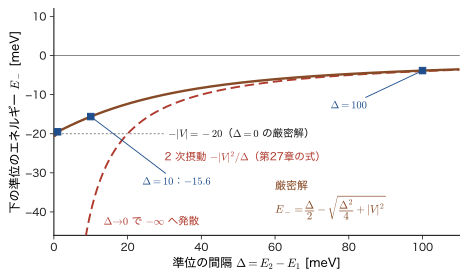
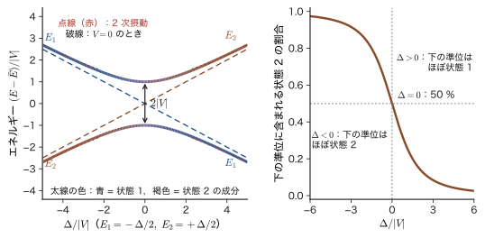
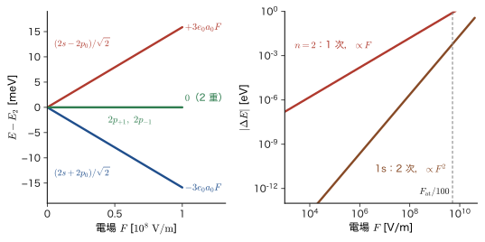
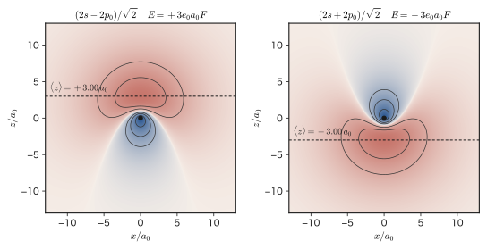

第28章縮退のある摂動論 — Stark 効果と Zeeman 効果
半導体の結晶に電場をかけると，光を吸収しはじめる波長が少しずれる．強い磁石の近くで原子の出す光を分光器で見ると，1 本だった輝線が 3 本に分かれる．どちらも「外から弱い場を加えたとき，原子や分子のエネルギー準位がどれだけ動くか」という問題で，前章（第27章）で学んだ摂動論の出番である．ところが，前章の公式をそのまま使おうとすると，肝心の場面で破綻する．水素原子の $n=2$ の準位には 2s，2p$_0$，2p$_{+1}$，2p$_{-1}$ の 4 つの状態が同じエネルギーで重なっており，前章の 2 次摂動の公式の分母 $E_n^{(0)}-E_k^{(0)}$ が $0$ になってしまうからである．同じエネルギーをもつ複数の状態があること——縮退（degeneracy）——は，量子力学ではむしろ普通のことである．球対称な原子の $m$ の $2l+1$ 重の縮退，電子スピンの 2 重の縮退，結晶場の中の d 軌道の縮退など，物質の性質を決める場面には，たいてい縮退がある．
この章の答えは，意外に簡単である．縮退した状態は「同じエネルギーをもつ」のだから，摂動がなければ，それらの重ね合わせは何をとっても同じエネルギーをもつ固有状態になる．摂動を加えると，その中の特別な重ね合わせだけが安定な状態として選ばれ，その重ね合わせは，摂動の強さを $0$ に近づけても変わらない．これを決めるのは，縮退した状態の間だけを取り出した小さな行列 $W$ を対角化する（AD 02 第12章 12.3）という作業である．行列の大きさは縮退度 $g$（水素の $n=2$ なら 4，ほとんどの場合はもっと小さい）で，摂動の強さによらない．この作業は，古典物理の連成振動（同じ振動数の振り子 2 個をばねでつなぐと，2 つの基準振動——同位相と逆位相——に分かれ，その振動数が少し変わる）と同じ構造である．弱い結合が，どの重ね合わせを固有モードにするかを決める．
この章では，まず縮退で第27章の公式がなぜ破綻するのかを，2 準位の模型で数値を見ながら確かめる（28.1 節）．次に縮退した準位への 1 次摂動を一般に定式化し（28.2 節），もっとも単純な 2 準位系の厳密解で，縮退摂動論と非縮退摂動論が一つの式でつながること，準位の反発，分子軌道やバンドギャップの起源を理解する（28.3 節）．そのうえで，材料と最も関係の深い 2 つの外場の効果——電場による Stark（シュタルク）効果（28.4 節）と磁場による Zeeman 効果（28.5 節）——を水素原子で計算し，シリコンやヒ化ガリウムの中の浅いドナー，電子スピン共鳴（ESR），ダイヤモンドの NV センターにつなげる．最後に，摂動の対称性が下がるにつれて縮退が解けていく様子を，配位子場（第43・44章）と Jahn–Teller（ヤーン–テラー）効果，固体のバンド端（k·p 摂動論）への予告として見る（28.6 節）．
- 縮退した準位に第27章の 2 次摂動の公式を適用すると分母が $0$ になって破綻すること，準縮退でも級数の収束半径 $\Delta/2\abs{V}$ が小さくなって同じ困難が起きること（28.1）
- 縮退摂動論の定式化：0 次の状態 $\sum_a a_a\varphi_a$，永年方程式 $\det(W-E^{(1)})=0$，$W_{ab}=\mel{\varphi_a}{\hat{V}}{\varphi_b}$，「良い状態」，対称性による $W$ の対角化，1 次で解けない縮退は 2 次で解くこと（28.2）
- 2 準位系の厳密解 $E_\pm=\tfrac12(E_1+E_2)\pm\sqrt{\Delta^2/4+\abs{V}^2}$，混合角 $\tan2\theta=2\abs{V}/\Delta$，準位の反発と回避交差（avoided crossing），NH$_3$ の反転，分子軌道・ほぼ自由な電子のバンドギャップ $E_{\mathrm g}=2\abs{U_G}$（28.3）
- Stark 効果：$\hat{V}=e_0F\hat{z}$（$=-\hat{\bm{d}}\cdot\bm{E}$），パリティと選択則，1s に 1 次の効果がないこと，$n=2$ の $4\times4$ 行列と固有値 $\pm3e_0a_0F$，$0$，$0$，一般の $n$ の $\tfrac32n(n_1-n_2)e_0a_0F$，GaAs の浅いドナー（28.4）
- Zeeman 効果：$\hat{H}_{\mathrm Z}=(\mu_{\mathrm B}/\hbar)B(\hat{L}_z+g_{\mathrm e}\hat{S}_z)$，正常 Zeeman 効果，異常 Zeeman 効果と Landé（ランデ）の $g_J$・Paschen–Back 効果（結果だけを述べ，詳細は第26章），ESR と NV センター（28.5）
- 立方場中の d 軌道の 5 重縮退の分裂（$e_g$：$+6Dq$，$t_{2g}$：$-4Dq$），Jahn–Teller 効果 $E_{\mathrm{JT}}=-V_{\mathrm{JT}}^2/2K$，縮退と対称性の関係（28.6）
もとにしたノート：本章は，ノートにない内容を補った章である．関連するノート：望月泰英『物理学ノート 量子力学3』 pp. 20–25（非縮退の摂動論）．
28.1 縮退があると何が困るか — 分母が 0 になる
28.1.1 縮退とは何か
第27章では，摂動を加える前のハミルトニアン $\hat{H}_0$ の固有値問題 $\hat{H}_0\psi_n^{(0)}=E_n^{(0)}\psi_n^{(0)}$ が解けているとして，弱い摂動 $\lambda\hat{V}$ を加えたハミルトニアン $\hat{H}=\hat{H}_0+\lambda\hat{V}$ の固有値と固有状態を $\lambda$ のべきで展開した．そのとき暗黙のうちに，$\hat{H}_0$ の固有値はすべて異なる，すなわち一つのエネルギーに一つの状態が対応するとしていた．この仮定が成り立たないのが縮退である．
定義28.1 縮退（degeneracy）
ハミルトニアン $\hat{H}_0$ の一つの固有値 $E^{(0)}$ に対して，互いに線形独立な固有状態が $g$ 個（$g\ge2$）あるとき，準位 $E^{(0)}$ は $g$ 重に縮退している（$g$-fold degenerate）といい，$g$ を縮退度（degree of degeneracy）という．同じエネルギーをもつ $g$ 個の状態を，互いに直交する規格化された $\varphi_1,\varphi_2,\dots,\varphi_g$ に選ぶ：
\begin{equation} \hat{H}_0\varphi_a=E^{(0)}\varphi_a,\qquad \braket{\varphi_a}{\varphi_b}=\delta_{ab}\qquad(a,b=1,\dots,g) \label{eq:28-deg} \end{equation}縮退している準位では，$\varphi_1,\dots,\varphi_g$ の任意の線形結合 $\varphi=\sum_a c_a\varphi_a$ もまた同じ固有値 $E^{(0)}$ の固有状態になる（$\hat{H}_0\varphi=\sum_ac_a\hat{H}_0\varphi_a=E^{(0)}\varphi$）．つまり縮退した準位の固有状態は，$g$ 次元のベクトル空間（縮退空間）を作っており，その中でどの基底を選ぶかは $\hat{H}_0$ だけからは決まらない．これがこの章の話の出発点になる．縮退は物質科学の至るところに現れる（表28.1）．
| 系 | 縮退している状態 | 縮退度 $g$ | 縮退の原因 |
|---|---|---|---|
| 水素原子（スピンを無視） | $n=2$：2s，2p$_0$，2p$_{+1}$，2p$_{-1}$ | $n^2$（$n=2$ で 4） | 球対称性（$m$ の縮退）と Coulomb 力に特有の縮退（$l$ の縮退，15.6 節） |
| 球対称なポテンシャルの中の原子 | 同じ $n,l$ で $m=-l,\dots,l$ の状態 | $2l+1$ | 球対称性（磁場のない空間には向きの区別がない） |
| 電子スピン（磁場がないとき） | $\uparrow$，$\downarrow$（$\alpha,\beta$） | 2 | 向きの区別がないこと |
| 2 次元の正方形の井戸 | $\psi_{12}$，$\psi_{21}$（$E=5\pi^2\hbar^2/2mL^2$） | 2 | $x$ と $y$ の入れ替えの対称性 |
| 立方対称の結晶場の中の d 電子 | $e_g$：$d_{z^2}$，$d_{x^2-y^2}$／$t_{2g}$：$d_{xy}$，$d_{yz}$，$d_{zx}$ | 2，3 | 立方対称性（第44章） |
| 等価な 2 個の原子でできた分子 | $\phi_{\mathrm A}$，$\phi_{\mathrm B}$（それぞれの原子の 1s） | 2 | 2 個の原子の入れ替えの対称性（28.3 節） |
2 次元の正方形の井戸の例（表28.1 の 4 行目）を補足しよう．幅 $L$ の正方形の無限井戸（第10章）の固有状態は $\psi_{nm}(x,y)=\varphi_n(x)\varphi_m(y)$，$\varphi_n(x)=\sqrt{2/L}\,\sin(n\pi x/L)$（$n,m=1,2,\dots$）で，エネルギーは $E_{nm}=\dfrac{\pi^2\hbar^2}{2mL^2}(n^2+m^2)$ である．$(n,m)=(1,2)$ と $(2,1)$ は $n^2+m^2=5$ で同じエネルギーをもち，$\psi_{12}=\varphi_1(x)\varphi_2(y)$ と $\psi_{21}=\varphi_2(x)\varphi_1(y)$ が 2 重に縮退している．この 2 つは $x$ と $y$ を入れ替えると互いに移りあう．正方形の対称性がこの縮退を生んでいる．長方形の井戸にすれば縮退は消える．
28.1.2 第27章の公式は縮退のとき使えない
第27章で導いた，非縮退の $n$ 番目の状態への 1 次と 2 次の補正は，行列要素 $V_{kn}=\mel{\psi_k^{(0)}}{\hat{V}}{\psi_n^{(0)}}$ を使って
\begin{equation} E_n^{(1)}=V_{nn},\qquad E_n^{(2)}=\sum_{k\ne n}\frac{\abs{V_{kn}}^2}{E_n^{(0)}-E_k^{(0)}},\qquad \psi_n^{(1)}=\sum_{k\ne n}\frac{V_{kn}}{E_n^{(0)}-E_k^{(0)}}\,\psi_k^{(0)} \label{eq:28-pt} \end{equation}と書けた（波動関数の補正は，中間規格化 $\braket{\psi_n^{(0)}}{\psi_n^{(1)}}=0$ をとったもの）．どの式も，右辺に エネルギーの差 $E_n^{(0)}-E_k^{(0)}$ を分母にもつ．ところが，$n$ 番目の状態と縮退している別の状態 $k$（$E_k^{(0)}=E_n^{(0)}$）があるとき，その和の項は $\abs{V_{kn}}^2/0$ となる．$V_{kn}\ne0$ なら項は無限大になり，式 \eqref{eq:28-pt} はまったく意味をもたない．$V_{kn}=0$ のときは $0/0$ という不定形になる（後者が，実は縮退があっても公式が使える特別な場合であることが，28.2 節でわかる）．
分母が $0$ に近いとき，つまり縮退していなくてもエネルギーが非常に近い 2 つの状態（準縮退，nearly degenerate）があるときも，同じ困難が起こる．次にそれを数値で確かめよう．
例題28.1 縮退のとき第27章の 2 次摂動の式は使えない
エネルギーが $E_1=0$ と $E_2=\Delta$ の 2 つの状態 $\varphi_1$，$\varphi_2$ があり，摂動が非対角要素 $V=\mel{\varphi_1}{\hat{V}}{\varphi_2}=\mel{\varphi_2}{\hat{V}}{\varphi_1}=0.020\ \mathrm{eV}$ だけをもつ（対角要素は $0$）．$\Delta=0.1,\ 0.01,\ 0.001,\ 0\ \mathrm{eV}$ のそれぞれについて，下の準位 $E_-$ の厳密解と，第27章の 2 次摂動の式（式 \eqref{eq:28-pt} の $E^{(2)}$）を比べよ．
解答 基底 $\{\varphi_1,\varphi_2\}$ でのハミルトニアンは $H=\begin{pmatrix}0&V\\V&\Delta\end{pmatrix}$ である．固有値は，永年方程式（固有方程式）
$$ \det(H-E)=\begin{vmatrix}-E&V\\V&\Delta-E\end{vmatrix}=(-E)(\Delta-E)-V^2=E^2-\Delta E-V^2=0 $$の 2 つの解である．解の公式より
$$ E_\pm=\frac{\Delta\pm\sqrt{\Delta^2+4V^2}}{2}=\frac{\Delta}{2}\pm\sqrt{\frac{\Delta^2}{4}+V^2} $$となる（一般の 2 準位系の解は 28.3 節でくわしく調べる）．下の準位は $E_-=\dfrac{\Delta}{2}-\sqrt{\dfrac{\Delta^2}{4}+V^2}$ で，$V=0.020\ \mathrm{eV}$，$V^2=4.0\times10^{-4}\ \mathrm{eV^2}$ を入れると，
- $\Delta=0.1\ \mathrm{eV}$：$\sqrt{0.0025+0.0004}=\sqrt{0.0029}=0.053852$ なので $E_-=0.05-0.053852=-0.003852\ \mathrm{eV}=-3.85\ \mathrm{meV}$．
- $\Delta=0.01\ \mathrm{eV}$：$\sqrt{2.5\times10^{-5}+4\times10^{-4}}=\sqrt{4.25\times10^{-4}}=0.020616$ なので $E_-=0.005-0.020616=-0.015616\ \mathrm{eV}=-15.6\ \mathrm{meV}$．
- $\Delta=0.001\ \mathrm{eV}$：$\sqrt{2.5\times10^{-7}+4\times10^{-4}}=0.020006$ なので $E_-=0.0005-0.020006=-0.019506\ \mathrm{eV}=-19.5\ \mathrm{meV}$．
- $\Delta=0$：$E_\pm=\pm V=\pm20\ \mathrm{meV}$，$E_-=-20\ \mathrm{meV}$．
一方，第27章の 2 次摂動の式は，状態 $\varphi_1$（$E_1=0$）に対して $E^{(2)}=\dfrac{V^2}{E_1-E_2}=-\dfrac{V^2}{\Delta}$ であるから，$-\dfrac{4\times10^{-4}}{\Delta}$ より，$\Delta=0.1,\ 0.01,\ 0.001\ \mathrm{eV}$ でそれぞれ $-4,\ -40,\ -400\ \mathrm{meV}$ となり，$\Delta=0$ では分母が $0$ で使えない．結果を表28.2 にまとめる．
| $\Delta$ [eV] | 厳密解 $E_-$ [meV] | 厳密解 $E_+$ [meV] | 2 次摂動 $-V^2/\Delta$ [meV] | 級数の収束半径 $\Delta/2V$ |
|---|---|---|---|---|
| 0.1 | $-3.85$ | $103.85$ | $-4.0$ | 2.5 |
| 0.01 | $-15.6$ | $25.6$ | $-40$ | 0.25 |
| 0.001 | $-19.5$ | $20.5$ | $-400$ | 0.025 |
| 0 | $-20.0$ | $+20.0$ | （分母が $0$） | 0 |
$\Delta=0.1\ \mathrm{eV}$ では 2 次摂動は厳密解 $-3.85\ \mathrm{meV}$ に対して $-4.0\ \mathrm{meV}$ と数 % の誤差で合う．ところが $\Delta$ を小さくすると，厳密解は $-20\ \mathrm{meV}$（$=-V$）に落ち着くのに，2 次摂動の式は $-40$，$-400\ \mathrm{meV}$ と増え続け，$\Delta\to0$ で発散する（図28.1）．最後の列は，第27章で調べた 2 準位モデルの摂動級数（$V$ を $\lambda V$ に置き換えたときの $\lambda$ のべき級数）の収束半径 $\lambda_c=\Delta/2V$ である．$\lambda=1$ が収束半径の中にないと級数は発散するので，$\Delta=0.01\ \mathrm{eV}$ 以下では，2 次や 3 次まで計算しても，級数を何項足しても正しい答えに近づかない．準縮退でも，事実上，縮退と同じ扱いが必要である．

関連シミュレーター：摂動論と He（タブ②「2 準位モデル」で，$\Delta$ を小さくしていくと摂動級数の収束が悪くなり，$\Delta=0$ では級数が使えなくなる様子を確かめられる．シミュレーターの $\hat{H}^{(0)}$，$\hat{H}'$ は，本書の $\hat{H}_0$，$\hat{V}$ に対応する．第27章）．
28.1.3 新しい問い：「正しい 0 次の状態」はどれか
ここで，例題28.1 の $\Delta=0$ の場合をもう少し見よう．$H=\begin{pmatrix}0&V\\V&0\end{pmatrix}$ の固有値は $E=\pm V$ で，固有ベクトルは $V\gt0$ のとき
$$ E=-V:\ \frac{1}{\sqrt2}\begin{pmatrix}1\\-1\end{pmatrix}=\frac{\varphi_1-\varphi_2}{\sqrt2},\qquad E=+V:\ \frac{1}{\sqrt2}\begin{pmatrix}1\\1\end{pmatrix}=\frac{\varphi_1+\varphi_2}{\sqrt2} $$である．注目してほしいのは，この固有ベクトルが $V$ の大きさによらない（$V=20\ \mathrm{meV}$ でも $V=0.001\ \mathrm{meV}$ でも同じ）ことである．$V\to0$ の極限で，厳密な固有状態は最初に用意した $\varphi_1$，$\varphi_2$ には戻らず，$(\varphi_1\pm\varphi_2)/\sqrt2$ に収束する．
問い：縮退した状態のうち，摂動が「選ぶ」重ね合わせはどれか
$\hat{H}_0$ は，縮退空間の中のどの基底も区別しない．$\varphi_1,\varphi_2$ を選ぼうと，$(\varphi_1\pm\varphi_2)/\sqrt2$ を選ぼうと，$\hat{H}_0$ にとってはどれも同じ固有状態の集まりである．これに対し，どんなに弱くても摂動 $\lambda\hat{V}$ を加えると，縮退は（少なくとも部分的に）解け，異なるエネルギーをもつ定常状態として残れるのは，ある特別な重ね合わせだけになる．そして，$\lambda\to0$ の極限で厳密な固有状態が収束する先も，この特別な重ね合わせである．したがって，縮退のある摂動論のためには，摂動を $0$ に戻した極限で，どの状態から出発するのが正しいか——正しい 0 次の状態（correct zeroth-order states，あるいは良い状態）——を，摂動 $\hat{V}$ 自身から決める必要がある．これを決めるのが 28.2 節の永年方程式である．
同じことは古典力学の連成振動でもいえる．同じ振動数 $\omega_0$ の 2 つの振り子を弱いばねでつなぐと，一方だけを振らせたときのエネルギーは 2 つの振り子の間を行き来し（うなり，AD 03 第17章 17.4），ばねを弱くしても，「一方だけが振れる」状態は定常にならない．定常な運動（基準振動）は，2 つが同位相で振れる状態と逆位相で振れる状態で，これらはばねの強さによらない重ね合わせである．基準振動の振動数が $\omega_0$ から少しだけ上下にずれる大きさが，ばねの強さ（結合）で決まる．量子力学の縮退摂動論は，これと同じ構造をもつ（関連シミュレーター：行列の対角化と測定のタブ③「連成振動」で，基準振動に分ける対角化を確かめられる）．
例題28.2 2 次元の正方形の井戸——なぜ $\psi_{12}$ だけを取ってはいけないか
幅 $L$ の 2 次元の正方形の無限井戸で，縮退した第 1 励起状態 $\psi_{12}=\varphi_1(x)\varphi_2(y)$，$\psi_{21}=\varphi_2(x)\varphi_1(y)$ に，(a) 摂動 $\hat{V}_a=V_0\,x/L$，(b) 摂動 $\hat{V}_b=V_0\,xy/L^2$（$V_0$ はエネルギーの次元をもつ小さな定数）を加える．それぞれの場合に，$\psi_{12}$ だけを「0 次の状態」と思って第27章の 1 次・2 次の式を使うと，どうなるかを定性的に述べよ．
解答 摂動の行列要素 $\mel{\psi_{21}}{\hat{V}}{\psi_{12}}$ を調べる．
(a) $\hat{V}_a$ は $x$ だけの関数なので，$\mel{\psi_{21}}{x}{\psi_{12}}=\braket{\varphi_2}{x\,\varphi_1}\braket{\varphi_1}{\varphi_2}$ となり，$y$ 方向の積分 $\braket{\varphi_1}{\varphi_2}=0$（直交性）のため，行列要素は $0$ である．つまり $\hat{V}_a$ は $\psi_{12}$ と $\psi_{21}$ を混ぜない．この場合は，$\psi_{12}$ と $\psi_{21}$ が最初から「良い状態」で，第27章の公式の分母が $0$ になる項の分子 $\abs{V_{kn}}^2$ も $0$ である（不定形 $0/0$ だが，実際に混ざらないので $0$ と考えてよい）．
(b) $\hat{V}_b=V_0\,xy/L^2$ は $x$ の関数と $y$ の関数の積で，$\mel{\psi_{21}}{xy}{\psi_{12}}=\braket{\varphi_2}{x\,\varphi_1}\braket{\varphi_1}{y\,\varphi_2}\ne0$ となる．積分 $\braket{\varphi_2}{x\,\varphi_1}$ は 0 でない（28.2 節で値を求める）．したがって $\hat{V}_b$ は，エネルギー差が $0$ の 2 つの状態 $\psi_{12}$ と $\psi_{21}$ を直接結びつけ，第27章の式の分母 $E_{12}^{(0)}-E_{21}^{(0)}=0$ に分子 $\abs{V_{21,12}}^2\ne0$ がかかって，2 次摂動は発散する．物理的には，「エネルギーを支払わずに $\psi_{12}\leftrightarrow\psi_{21}$ の間を移れる」ので，どんなに弱い摂動でも，$\psi_{12}$ と $\psi_{21}$ は 1 のオーダーで混ざり，一方だけを取ることが正しくないのである．正しい 0 次の状態は $\psi_{12}$ と $\psi_{21}$ の対称な組合せ・反対称な組合せで，次節で示す．
結局，「どの重ね合わせが良い状態か」は $\hat{H}_0$ ではなく摂動 $\hat{V}$ で決まる．同じ縮退した準位でも，(a) のように $\{\psi_{12},\psi_{21}\}$ が良い状態になる摂動もあれば，(b) のようにそうでない摂動もある．
28.2 縮退のある摂動論 — 縮退した部分空間での対角化
28.2.1 設定 — 0 次の状態は縮退空間の中の重ね合わせ
28.1 節で見たとおり，縮退した準位への摂動では，0 次の状態が縮退空間の中のどの重ね合わせになるかを，方程式から決めなければならない．第27章と同じく，$\hat{H}=\hat{H}_0+\lambda\hat{V}$ を考え，$\lambda$ を $0$ から少しずつ大きくしていく．$\hat{H}_0$ の準位のうち，考える 1 つを $E^{(0)}$（$g$ 重に縮退，固有状態 $\varphi_1,\dots,\varphi_g$．式 \eqref{eq:28-deg}）とし，それ以外の準位の固有状態を $\psi_k^{(0)}$（エネルギー $E_k^{(0)}\ne E^{(0)}$）と書く．$\{\varphi_a\}$ と $\{\psi_k^{(0)}\}$ を合わせると，$\hat{H}_0$ の固有状態の完全な正規直交系になる．
導出：縮退した準位への 1 次の摂動
[i] 展開．$\lambda$ でつながる固有状態とエネルギーを，第27章と同じように $\lambda$ のべき級数に展開する：
$$ \psi=\psi^{(0)}+\lambda\psi^{(1)}+\lambda^2\psi^{(2)}+\cdots,\qquad E=E^{(0)}+\lambda E^{(1)}+\lambda^2E^{(2)}+\cdots $$これを Schrödinger 方程式 $(\hat{H}_0+\lambda\hat{V})\psi=E\psi$ に代入し，$\lambda$ のべきごとに集める．$\lambda^0$ の項と $\lambda^1$ の項は
\begin{align} &\lambda^0:\quad \hat{H}_0\psi^{(0)}=E^{(0)}\psi^{(0)}, \label{eq:28-ord0}\\ &\lambda^1:\quad \hat{H}_0\psi^{(1)}+\hat{V}\psi^{(0)}=E^{(0)}\psi^{(1)}+E^{(1)}\psi^{(0)} \ \Longleftrightarrow\ (\hat{H}_0-E^{(0)})\,\psi^{(1)}=(E^{(1)}-\hat{V})\,\psi^{(0)} \label{eq:28-ord1} \end{align}[ii] 0 次．式 \eqref{eq:28-ord0} は，$\psi^{(0)}$ が $\hat{H}_0$ の固有値 $E^{(0)}$ の固有状態であることを述べている．したがって $\psi^{(0)}$ は縮退空間の中にあり，
\begin{equation} \psi^{(0)}=\sum_{a=1}^{g}a_a\,\varphi_a,\qquad \sum_a\abs{a_a}^2=1 \label{eq:28-zeroth} \end{equation}と書ける（第27章の非縮退の場合は $g=1$ で，係数は $1$ に決まっていた）．ここでは係数 $a_a$ がまだ決まらない．これらを決めるのが 1 次の方程式である．
[iii] 1 次の方程式を縮退空間に射影する．式 \eqref{eq:28-ord1} の両辺に左から $\bra{\varphi_b}$ をかける．左辺は，$\hat{H}_0$ がエルミートで $(\hat{H}_0-E^{(0)})\varphi_b=0$ であることから，
$$ \mel{\varphi_b}{\hat{H}_0-E^{(0)}}{\psi^{(1)}}=\braket{(\hat{H}_0-E^{(0)})\varphi_b}{\psi^{(1)}}=0 $$となり，未知の $\psi^{(1)}$ が消える．右辺は $\bra{\varphi_b}(E^{(1)}-\hat{V})\ket{\psi^{(0)}}=E^{(1)}a_b-\sum_a\mel{\varphi_b}{\hat{V}}{\varphi_a}\,a_a$ である（式 \eqref{eq:28-zeroth} と $\braket{\varphi_b}{\varphi_a}=\delta_{ba}$ を使った）．よって
\begin{equation} \sum_{a=1}^{g}\bigl(W_{ba}-E^{(1)}\delta_{ba}\bigr)a_a=0\qquad(b=1,\dots,g),\qquad W_{ba}\equiv\mel{\varphi_b}{\hat{V}}{\varphi_a} \label{eq:28-secular-lin} \end{equation}を得る．
（導出終わり）
式 \eqref{eq:28-secular-lin} は $g$ 個の未知数 $a_1,\dots,a_g$ についての同次連立 1 次方程式である．自明でない解（$a\ne0$）が存在するための条件は，係数行列の行列式が $0$ になること（AD 02 第12章 12.1）である．ここに現れる $W_{ab}$ は，第27章の行列要素 $V_{mn}$ を，縮退空間の $g$ 個の状態の間だけに制限した $g\times g$ 行列である（縮退空間の中の小さな行列であることを $V_{mn}$ と区別するために $W$ と書く）．また $\mathbb{1}$ は $g\times g$ の単位行列（対角成分が $1$，ほかは $0$）を表す．これで次の結論が得られた．
定理28.1 縮退した準位への 1 次摂動（縮退摂動論）
$g$ 重に縮退した準位 $E^{(0)}$ に摂動 $\lambda\hat{V}$ を加えたとき，1 次のエネルギー補正 $E^{(1)}$ は，縮退空間の中の摂動の行列
\begin{equation} W_{ab}=\mel{\varphi_a}{\hat{V}}{\varphi_b}=\int\varphi_a^*\,\hat{V}\,\varphi_b\,\dd\tau\qquad(a,b=1,\dots,g) \label{eq:28-W} \end{equation}（$g\times g$ のエルミート行列）の固有値である．すなわち，永年方程式（secular equation）
\begin{equation} \det\bigl(W-E^{(1)}\,\mathbb{1}\bigr)=\begin{vmatrix} W_{11}-E^{(1)}&W_{12}&\cdots&W_{1g}\\ W_{21}&W_{22}-E^{(1)}&\cdots&W_{2g}\\ \vdots&\vdots&\ddots&\vdots\\ W_{g1}&W_{g2}&\cdots&W_{gg}-E^{(1)} \end{vmatrix}=0 \label{eq:28-secular} \end{equation}の $g$ 個の根 $E_1^{(1)},\dots,E_g^{(1)}$（重根も数える）が，$g$ 個の準位の 1 次の補正である．また，各根に対する固有ベクトル $(a_1,\dots,a_g)^{\mathsf T}$ が，正しい 0 次の状態 $\eta_i=\sum_aa_a^{(i)}\varphi_a$（良い状態）を与える．
$W$ はエルミート行列だから，固有値 $E_i^{(1)}$ はすべて実数で，異なる固有値の固有ベクトルは互いに直交する（AD 02 第12章）．重根があるときも，固有ベクトルを互いに直交するように選べる．$g=1$ のとき，$W$ は $1\times1$ 行列 $W_{11}=\mel{\varphi_1}{\hat{V}}{\varphi_1}$ で，式 \eqref{eq:28-secular} は $E^{(1)}=\mel{\varphi_1}{\hat{V}}{\varphi_1}$ となり，第27章の非縮退の 1 次摂動 $E_n^{(1)}=V_{nn}$ を再現する．非縮退の公式は縮退摂動論の特別な場合（$1\times1$ の行列）である．
数学の道具：固有値問題としての永年方程式
式 \eqref{eq:28-secular-lin} は，行列 $W$ の固有値問題 $W\bm{a}=E^{(1)}\bm{a}$ そのものである．行列の固有値・固有ベクトルの求め方と，行列の対角化は，AD 02 の第12章 12.1（定義と永年方程式）と12.3（対角化）で扱った．量子力学では，「縮退空間の中で $\hat{V}$ を対角化する基底を探すこと」が縮退摂動論の内容である．行列の大きさは $g\times g$ で，摂動の強さ $\lambda$ を含まない．関連シミュレーター：行列の対角化と測定（非対角成分が消える基底が固有状態であることを目で確かめられる）．
28.2.2 「良い状態」とは何か
定理28.1 の固有ベクトル $\eta_i$ は，縮退空間の中で $\hat{V}$ を対角にする基底である：
\begin{equation} \mel{\eta_i}{\hat{V}}{\eta_j}=E_i^{(1)}\,\delta_{ij} \label{eq:28-diag} \end{equation}実際，$\eta_i=\sum_aa_a^{(i)}\varphi_a$ とおくと $\mel{\eta_i}{\hat{V}}{\eta_j}=\sum_{ab}a_a^{(i)*}W_{ab}a_b^{(j)}=E_j^{(1)}\sum_aa_a^{(i)*}a_a^{(j)}=E_j^{(1)}\delta_{ij}$ である．したがって，縮退した準位の基底を $\{\eta_i\}$ に取り直せば，「縮退した状態どうしを結ぶ $\hat{V}$ の行列要素はすべて $0$」になる．これが「良い状態」の意味であり，そうした基底に対しては，第27章の公式の分母が $0$ になる項（式 \eqref{eq:28-pt} で，縮退した相手の状態 $k$ の項）は，分子の $\abs{V_{kn}}^2$ も $0$ になって現れない．縮退摂動論は，非縮退の公式が使えるような状態を先に探す手続きだと考えてもよい．
イメージ：$W$ のさまざまな場合
(1) すべての根が異なる（$E_1^{(1)},\dots,E_g^{(1)}$ が全部違う）：縮退が完全に解ける．$g$ 重の準位が 1 次で $g$ 本に分かれる．
(2) 一部の根が重なる：縮退が一部だけ解ける．たとえば 4 重に縮退した準位が，$2$ 本（非縮退）と 1 本（2 重）に分かれる（28.4 節の水素の $n=2$ の Stark 効果は，$+3e_0a_0F$，$-3e_0a_0F$，$0$（2 重）の 3 本に分かれる）．
(3) $W$ が単位行列の定数倍（$W=w\mathbb{1}$）：1 次では準位が全体としてずれるだけで，縮退は解けない．解けなかった縮退は 2 次で解く（28.2.4 節）．
(4) $W=0$：1 次の補正はない．
重要な補足として，1 次の波動関数の補正 $\psi^{(1)}$ のうち，縮退空間の外の状態 $\psi_k^{(0)}$（$E_k^{(0)}\ne E^{(0)}$）の成分は，非縮退の場合と同じ形で決まる：
\begin{equation} \psi_i^{(1)}\ni\sum_{k\notin\mathrm{D}}\frac{\mel{\psi_k^{(0)}}{\hat{V}}{\eta_i}}{E^{(0)}-E_k^{(0)}}\,\psi_k^{(0)} \label{eq:28-psi1} \end{equation}（$\mathrm{D}$ は縮退空間．分母が $0$ になる項は含まれない）．縮退空間の内の成分は，1 次の方程式ではなく，2 次の方程式から決まる．
28.2.3 対称性を使うと $W$ が対角になる
$g\times g$ の永年方程式は，$g$ が大きいと大変に見えるが，摂動に対称性があれば，行列は最初からほとんど対角になっている．
定理28.2 対称性による $W$ の対角化
エルミート演算子 $\hat{O}$（たとえば $\hat{L}_z$，パリティ，2 つの座標の入れ替え）が，$\hat{H}_0$ とも $\hat{V}$ とも交換するとする：$\comm{\hat{O}}{\hat{H}_0}=\comm{\hat{O}}{\hat{V}}=0$．このとき縮退空間の基底を $\hat{O}$ の固有状態 $\hat{O}\varphi_a=o_a\varphi_a$ に選べて，
\begin{equation} W_{ab}=0\qquad(o_a\ne o_b) \label{eq:28-selection} \end{equation}である．すなわち $W$ は，$\hat{O}$ の固有値ごとのブロックに分かれる（ブロック対角）．$\hat{O}$ の固有値がすべて異なれば $W$ は最初から対角で，$\varphi_a$ がそのまま良い状態になる．
証明
$\hat{O}$ は $\hat{H}_0$ と交換するので，縮退空間の状態 $\varphi$ に対して $\hat{H}_0(\hat{O}\varphi)=\hat{O}\hat{H}_0\varphi=E^{(0)}\hat{O}\varphi$ となり，$\hat{O}\varphi$ も縮退空間の状態である．つまり $\hat{O}$ は縮退空間を縮退空間に写すので，縮退空間の中で $\hat{O}$ を対角化する基底（$\hat{O}$ の固有状態）が取れる．次に，$0=\mel{\varphi_a}{\comm{\hat{O}}{\hat{V}}}{\varphi_b}=\mel{\varphi_a}{\hat{O}\hat{V}-\hat{V}\hat{O}}{\varphi_b}$ を計算する．$\hat{O}$ がエルミートなので $\bra{\varphi_a}\hat{O}=o_a\bra{\varphi_a}$（$o_a$ は実数）だから，
$$ 0=o_a\mel{\varphi_a}{\hat{V}}{\varphi_b}-o_b\mel{\varphi_a}{\hat{V}}{\varphi_b}=(o_a-o_b)\,W_{ab} $$となる．$o_a\ne o_b$ なら $W_{ab}=0$ である．
（証明終わり）
定理28.2 は，行列要素が $0$ になる理由を対称性から与える 選択則（selection rule）である．典型的な使い方は 2 つある．
- $\hat{L}_z$ が保存される場合：$z$ 軸のまわりの回転に対して不変な摂動（$z$ 方向の電場や磁場）は $\hat{L}_z$ と交換するので，$W_{ab}$ は磁気量子数が等しい状態の間（$m_a=m_b$）にしか $0$ でない値をもたない．28.4 節の Stark 効果と 28.5 節の Zeeman 効果で使う．
- パリティ：$\hat{P}\ket{\psi(\bm{r})}=\ket{\psi(-\bm{r})}$．原子の状態は $(-1)^l$ のパリティをもつ．偶パリティの摂動（$\hat{P}\hat{V}\hat{P}^{-1}=\hat{V}$）は同じパリティの状態の間にしか行列要素をもたない．奇パリティの摂動（電場 $\hat{V}\propto z$ など）は，同じパリティの状態の間の行列要素が $0$ で，異なるパリティの状態の間だけが $0$ でない（28.4 節）．
例題28.3 2 次元の正方形の井戸の縮退摂動 $\hat{V}=V_0xy/L^2$
28.1 節の 2 重に縮退した準位 $\psi_{12},\psi_{21}$（$E^{(0)}=5\pi^2\hbar^2/2mL^2$）に，摂動 $\hat{V}=V_0\,xy/L^2$ を加える．1 次のエネルギー補正と，正しい 0 次の状態を求めよ．また，縮退していない $\psi_{11}$ の 1 次の補正と比べよ．
解答 まず 1 次元の行列要素 $x_{nm}\equiv\braket{\varphi_n}{x\,\varphi_m}=\dfrac{2}{L}\displaystyle\int_0^Lx\sin\frac{n\pi x}{L}\sin\frac{m\pi x}{L}\dd x$ を求める．$u=\pi x/L$ とおくと $x_{nm}=\dfrac{2L}{\pi^2}\displaystyle\int_0^\pi u\sin nu\,\sin mu\dd u$ である．
(i) $n=m$：$\sin^2nu=\dfrac{1-\cos2nu}{2}$ より $\displaystyle\int_0^\pi u\sin^2nu\dd u=\dfrac{\pi^2}{4}-\dfrac12\int_0^\pi u\cos2nu\dd u=\dfrac{\pi^2}{4}$（$\int_0^\pi u\cos ku\dd u=\bigl[\tfrac{u\sin ku}{k}\bigr]_0^\pi+\bigl[\tfrac{\cos ku}{k^2}\bigr]_0^\pi=\dfrac{(-1)^k-1}{k^2}$ で，$k=2n$ は偶数なので $0$）．よって $x_{nn}=\dfrac{2L}{\pi^2}\cdot\dfrac{\pi^2}{4}=\dfrac L2$（井戸の中心，$\varphi_n$ が $x=L/2$ について対称または反対称なので当然の値）．
(ii) $n=1$，$m=2$：積和公式 $\sin u\sin2u=\tfrac12(\cos u-\cos3u)$ と上の $\int_0^\pi u\cos ku\dd u=\dfrac{(-1)^k-1}{k^2}$ より
$$ \int_0^\pi u\sin u\sin2u\dd u=\frac12\left(\frac{-2}{1}-\frac{-2}{9}\right)=\frac12\cdot\left(-\frac{16}{9}\right)=-\frac89,\qquad x_{12}=x_{21}=\frac{2L}{\pi^2}\left(-\frac89\right)=-\frac{16L}{9\pi^2} $$である．$\psi_{12}=\varphi_1(x)\varphi_2(y)$，$\psi_{21}=\varphi_2(x)\varphi_1(y)$ だから，$\hat{V}=V_0\,xy/L^2$ の行列要素は $x$ 方向と $y$ 方向の積になり，
\begin{align} W_{11}&=\mel{\psi_{12}}{\hat{V}}{\psi_{12}}=\frac{V_0}{L^2}\,x_{11}\,y_{22}=\frac{V_0}{L^2}\cdot\frac L2\cdot\frac L2=\frac{V_0}{4},\qquad W_{22}=\frac{V_0}{L^2}\,x_{22}\,y_{11}=\frac{V_0}{4},\notag\\ W_{12}&=\mel{\psi_{12}}{\hat{V}}{\psi_{21}}=\frac{V_0}{L^2}\,x_{12}\,y_{21}=\frac{V_0}{L^2}\left(-\frac{16L}{9\pi^2}\right)^2=\frac{256}{81\pi^4}V_0\ (=0.03245\,V_0)=W_{21}\notag \end{align}となる．よって
$$ W=V_0\begin{pmatrix}\dfrac14&\dfrac{256}{81\pi^4}\\[2mm]\dfrac{256}{81\pi^4}&\dfrac14\end{pmatrix} $$永年方程式 $\det(W-E^{(1)})=(V_0/4-E^{(1)})^2-(256V_0/81\pi^4)^2=0$ より $E^{(1)}=V_0\bigl(\tfrac14\pm\tfrac{256}{81\pi^4}\bigr)$，すなわち $0.2824\,V_0$ と $0.2176\,V_0$ である．固有ベクトルは，$W_{12}\gt0$ なので，$E^{(1)}=\bigl(\tfrac14+\tfrac{256}{81\pi^4}\bigr)V_0$ に対して $(a_1,a_2)=(1,1)/\sqrt2$，$E^{(1)}=\bigl(\tfrac14-\tfrac{256}{81\pi^4}\bigr)V_0$ に対して $(1,-1)/\sqrt2$．つまり良い状態は
$$ \eta_\pm=\frac{\psi_{12}\pm\psi_{21}}{\sqrt2},\qquad E_\pm=\frac{5\pi^2\hbar^2}{2mL^2}+\left(\frac14\pm\frac{256}{81\pi^4}\right)V_0 $$で，$x\leftrightarrow y$ の入れ替えに対して対称な状態（$+$）は上に，反対称な状態（$-$）は下にずれる．縮退のない $\psi_{11}$ の 1 次の補正は $\mel{\psi_{11}}{\hat{V}}{\psi_{11}}=V_0x_{11}y_{11}/L^2=V_0/4$ である．縮退した 2 状態のずれの平均 $\tfrac12(E_++E_-)$ がちょうどこれと同じ $V_0/4$ になるのは，$W$ の対角要素の平均（トレースの半分）が $V_0/4$ だからで，摂動によって準位が平均としては同じだけ動き，対称・反対称の結合 $W_{12}$ の分だけ上下に分かれる，という構造になっている．
例題28.4 3 重縮退——3 個の等価な原子が一列に並んだ系
3 個の等価な原子 1，2，3 が一列に並び，それぞれの原子に，同じエネルギー $\varepsilon_0$ の準位（状態 $\varphi_1,\varphi_2,\varphi_3$）がある．隣り合う原子の間の摂動の行列要素を $b$（$W_{12}=W_{23}=b$），両端の原子の間は $W_{13}=0$，対角要素は $W_{11}=W_{22}=W_{33}=a$ とする（$a,b$ は実数）．3 個の準位を求めよ．
解答 永年方程式は $W=\begin{pmatrix}a&b&0\\b&a&b\\0&b&a\end{pmatrix}$ について
$$ \begin{vmatrix}a-E&b&0\\b&a-E&b\\0&b&a-E\end{vmatrix} =(a-E)\bigl[(a-E)^2-b^2\bigr]-b\bigl[b(a-E)-0\bigr]=(a-E)\bigl[(a-E)^2-2b^2\bigr]=0 $$（第 1 行で展開した）．よって $E^{(1)}=a$，$a\pm\sqrt2\,b$ の 3 個の根が得られる．固有ベクトルは，$E=a+\sqrt2\,b$ に対して $(1,\sqrt2,1)/2$，$E=a$ に対して $(1,0,-1)/\sqrt2$，$E=a-\sqrt2\,b$ に対して $(1,-\sqrt2,1)/2$ である（それぞれ $W\bm{v}=E\bm{v}$ に代入して確かめられる．たとえば $E=a$ では $W(1,0,-1)^{\mathsf T}=(a,\ b-b,\ -a)^{\mathsf T}=a(1,0,-1)^{\mathsf T}$）．3 本の準位は $a$ を中心に等間隔（間隔 $\sqrt2\,b$）に並び，重心（平均）は $a$ のまま動かない．波動関数の符号の変化（節）の数は，$(1,\sqrt2,1)$ が 0 個，$(1,0,-1)$ が 1 個，$(1,-\sqrt2,1)$ が 2 個で，$b\lt0$ ならエネルギーの低い順に並ぶ．これは，アリル基（$\mathrm{CH_2\!-\!CH\!-\!CH_2}$）の $\pi$ 軌道の Hückel 理論（第40章）で，準位が $\alpha+\sqrt2\beta$，$\alpha$，$\alpha-\sqrt2\beta$ になる結果と同じ構造である（そこでは $a=\alpha$，$b=\beta\lt0$）．分子軌道は，原子軌道がつくる縮退した準位への摂動論である．
28.2.4 1 次で解けない縮退は 2 次で解く
$W$ が縮退したままの根をもつとき（たとえば $W=w\mathbb{1}$）は，その根に対応する部分空間では，1 次の補正では良い状態が決まらない．この場合は 2 次のエネルギーを使って，残った縮退を解く．それを一般的に扱うのが，縮退した部分空間 $\mathrm{D}$ への射影演算子 $P=\sum_a\ket{\varphi_a}\bra{\varphi_a}$ と，それ以外の空間への射影演算子 $Q=1-P$ を使った有効ハミルトニアン（effective Hamiltonian）の方法である．
導出：2 次までの有効ハミルトニアン
固有方程式 $(\hat{H}_0+\lambda\hat{V})\psi=E\psi$ の解 $\psi$ を $P\psi+Q\psi$ に分け，$P$ と $Q$ をかけた 2 つの式を作る（$P\hat{H}_0=\hat{H}_0P=E^{(0)}P$，$P+Q=1$）：
$$ (E-E^{(0)}-\lambda P\hat{V}P)\,P\psi=\lambda P\hat{V}Q\psi,\qquad (E-Q\hat{H}_0Q-\lambda Q\hat{V}Q)\,Q\psi=\lambda Q\hat{V}P\psi $$第 2 式から $Q\psi=\lambda(E-Q\hat{H}_0Q-\lambda Q\hat{V}Q)^{-1}Q\hat{V}P\psi$．$\lambda$ の最低次では $E\to E^{(0)}$，$\lambda Q\hat{V}Q\to0$ としてよいので，$Q\psi\simeq\lambda(E^{(0)}-\hat{H}_0)^{-1}Q\hat{V}P\psi$（$Q$ の空間では $E^{(0)}-\hat{H}_0$ は $0$ を固有値にもたず，逆行列が存在する）．これを第 1 式に代入すると，縮退空間 $P\psi$ だけの方程式
\begin{equation} E\,P\psi=\hat{H}_{\mathrm{eff}}\,P\psi,\qquad \hat{H}_{\mathrm{eff}}=E^{(0)}+\lambda P\hat{V}P+\lambda^2\,P\hat{V}Q\,\frac{1}{E^{(0)}-\hat{H}_0}\,Q\hat{V}P+O(\lambda^3) \label{eq:28-Heff} \end{equation}が得られる．
（導出終わり）
式 \eqref{eq:28-Heff} の意味は次のとおりである．縮退空間 $\mathrm{D}$（$g$ 次元）の中の $g\times g$ 行列としての $\hat{H}_{\mathrm{eff}}$ は，1 次の項 $\lambda W$ と，2 次の項
\begin{equation} W^{(2)}_{ab}=\sum_{k\notin\mathrm{D}}\frac{\mel{\varphi_a}{\hat{V}}{\psi_k^{(0)}}\mel{\psi_k^{(0)}}{\hat{V}}{\varphi_b}}{E^{(0)}-E_k^{(0)}}\qquad(a,b\in\mathrm{D}) \label{eq:28-W2} \end{equation}の和で，2 次までのエネルギーは $\hat{H}_{\mathrm{eff}}$ の固有値である．縮退空間の外の状態 $\psi_k^{(0)}$ は，「$\varphi_b$ に $\hat{V}$ が作用して $\psi_k^{(0)}$ に移り（途中の状態），そこから $\hat{V}$ で $\varphi_a$ に戻る」という過程を，エネルギー分母 $E^{(0)}-E_k^{(0)}$（$\ne0$）で重みづけて足したものになっている．第27章の非縮退の 2 次摂動の式は，縮退空間が 1 次元で，$\varphi_a=\varphi_b=\psi_n^{(0)}$ の場合である．1 次の $W$ が単位行列の定数倍のとき，縮退が解けるかどうかは，2 次の行列 $W^{(2)}$ の固有値で決まる．また，$W$ の根がすべて異なるとき，2 次のエネルギーは $W^{(2)}$ の対角要素を良い状態 $\eta_i$ で取り直したもの $E_i^{(2)}=\sum_{k\notin\mathrm{D}}\abs{\mel{\psi_k^{(0)}}{\hat{V}}{\eta_i}}^2/(E^{(0)}-E_k^{(0)})$ になる．
この手続きは，Löwdin（レーヴディン）の分割法（partitioning）や，固体物理の k·p 摂動論（28.6.4 節），スピンの間の交換相互作用を導く超交換の理論など，「低いエネルギーの部分空間だけを取り出して，高いエネルギーの状態の効果を有効な相互作用として繰り込む」多くの理論の原型である．
例題28.5 1 次では縮退が解けない場合——$\psi_{13}$，$\psi_{31}$ と $\hat{V}=V_0xy/L^2$
2 次元の正方形の井戸の 3 番目の縮退した準位 $\psi_{13}$，$\psi_{31}$（$n^2+m^2=10$，$E^{(0)}=5\pi^2\hbar^2/mL^2$）に，例題28.3 と同じ摂動 $\hat{V}=V_0\,xy/L^2$ を加える．1 次の $W$ を求め，縮退が解けるかどうか調べよ．また，解けない場合，2 次の $W^{(2)}$ の性質を述べよ．
解答 1 次元の行列要素は，例題28.3 の (i) より $x_{11}=x_{33}=L/2$，$n+m$ が偶数の $n\ne m$（$n=1,m=3$）では，$\int_0^\pi u\sin nu\sin mu\dd u=\tfrac12\int_0^\pi u\,[\cos(n-m)u-\cos(n+m)u]\dd u$ で，$n\pm m$ がともに偶数なので $\int_0^\pi u\cos ku\dd u=0$（$k$ が偶数）となり，$x_{13}=0$ である．したがって
$$ W_{11}=\frac{V_0}{L^2}x_{11}y_{33}=\frac{V_0}{4},\quad W_{22}=\frac{V_0}{4},\quad W_{12}=\frac{V_0}{L^2}x_{13}y_{31}=0\ \Longrightarrow\ W=\frac{V_0}{4}\begin{pmatrix}1&0\\0&1\end{pmatrix} $$となり，$W$ は単位行列の $V_0/4$ 倍である．2 状態はともに $V_0/4$ だけずれ，縮退は 1 次では解けない．
2 次の行列 $W^{(2)}$ は，式 \eqref{eq:28-W2} の $k$ を，$n^2+m^2\ne10$ の 2 次元の井戸のすべての状態 $\psi_{nm}$ について足したものである．摂動 $\hat{V}$ と $\hat{H}_0$ は入れ替え演算子 $\hat{\Pi}:\ (x,y)\to(y,x)$ と交換するので，$\hat{\Pi}$ の固有状態 $\eta_\pm=(\psi_{13}\pm\psi_{31})/\sqrt2$（固有値 $\pm1$）が定理28.2 の意味で良い状態であり，$W^{(2)}$ は $\eta_\pm$ で対角である．中間状態 $\psi_{nm}$ への行列要素は $\mel{\psi_{nm}}{\hat{V}}{\eta_\pm}=\tfrac{V_0}{\sqrt2L^2}\,(x_{n1}x_{m3}\pm x_{n3}x_{m1})$（$x_{nm}$ は上の $x$ 方向の行列要素）で，$x_{nm}=-8nmL/[\pi^2(n^2-m^2)^2]$（$n+m$ が奇数のとき），$x_{nn}=L/2$，$n+m$ が偶数の $n\ne m$ では $0$ となる．エネルギー分母は $E^{(0)}-E_{nm}^{(0)}=\tfrac{\pi^2\hbar^2}{2mL^2}(10-n^2-m^2)$ である．エネルギーの単位を $mL^2V_0^2/\hbar^2$ にとって，寄与の大きい項をいくつか書く．
- $(n,m)=(2,3)$ と $(3,2)$：$x_{21}x_{33}=-\tfrac{8}{9\pi^2}$ だけが残り（$x_{23}x_{31}=0$），$\eta_+$ にも $\eta_-$ にも同じ値 $-\dfrac{64}{243\pi^6}=-2.74\times10^{-4}$ を 1 つあたりに与える．
- $(n,m)=(1,4)$ と $(4,1)$：1 つあたり $-1.43\times10^{-4}$（$\eta_\pm$ に共通）．
- $(n,m)=(1,2)$ と $(2,1)$：分母が正（$10-5=5>0$）なので，1 つあたり $+1.92\times10^{-4}$（$\eta_\pm$ に共通）．
- $(n,m)=(2,2)$：$\eta_+$ にだけ寄与し（$\eta_-$ では $x_{21}x_{23}-x_{23}x_{21}=0$），$+2.49\times10^{-4}$．
$\eta_-$ では，上の共通の 3 組の合計が $2\times(-2.74-1.43+1.92)\times10^{-4}=-4.50\times10^{-4}$ で，これに $(2,4)$，$(4,2)$ など残りの項の合計 $-0.23\times10^{-4}$ を（計算機で）足して，$W^{(2)}_{\eta_-}=-4.73\times10^{-4}$ となる．$\eta_+$ では，共通の項に加えて $(2,2)$ の正の項などが加わるため，$W^{(2)}_{\eta_+}=-2.33\times10^{-4}$ と $\eta_-$ より高い．したがって，2 状態は 2 次で分かれる：
$$ E_\pm=\frac{5\pi^2\hbar^2}{mL^2}+\frac{V_0}{4}-\bigl(2.33\text{ または }4.73\bigr)\times10^{-4}\,\frac{mL^2V_0^2}{\hbar^2} $$（上の値は $\eta_+$，下の値は $\eta_-$．たとえば $V_0=0.05\,\hbar^2/mL^2$ のとき，2 次のずれは $\eta_+$ で $-5.8\times10^{-7}$，$\eta_-$ で $-1.2\times10^{-6}$（$\hbar^2/mL^2$ の単位）で，1 次の $V_0/4=1.25\times10^{-2}$ に比べてはるかに小さい．）分裂は 2 次なので，例題28.3（分裂が 1 次）よりずっと小さい．
28.3 2 準位系と準位の反発 — 二つの摂動論をつなぐ厳密解
28.3.1 一般の 2 準位系の厳密解
縮退摂動論で最も小さい場合は $g=2$ の場合で，その永年方程式は 2 次方程式になり，厳密に解ける．しかもこの解は，2 つの準位がぴったり縮退している必要はない．エネルギーが $E_1$ と $E_2$ の 2 つの状態 $\ket{1}$，$\ket{2}$ が，摂動 $V=\mel{1}{\hat{V}}{2}$ で結ばれているとき，これら 2 つの状態の張る空間で $\hat{H}$ を表す $2\times2$ の行列
\begin{equation} H=\begin{pmatrix}E_1&V\\V^*&E_2\end{pmatrix},\qquad E_1\le E_2,\quad \Delta\equiv E_2-E_1\ge0,\quad V=\abs{V}e^{i\delta} \label{eq:28-H2} \end{equation}を，$\abs{V}$ が小さくなくても解こう．（$E_1,E_2$ には，摂動の対角要素も含めておく．$V$ は一般に複素数で，$\delta$ はその位相．）
定理28.3 2 準位系の厳密解
式 \eqref{eq:28-H2} の固有値は
\begin{equation} E_\pm=\frac{E_1+E_2}{2}\pm\sqrt{\frac{\Delta^2}{4}+\abs{V}^2} \label{eq:28-2level} \end{equation}である．固有状態は，混合角 $\theta$（$0\le\theta\le\pi/4$）を
\begin{equation} \tan2\theta=\frac{2\abs{V}}{\Delta} \label{eq:28-mix} \end{equation}で定義すると，下の準位（$E_-$）が $\ket{-}=\cos\theta\,\ket{1}-\sin\theta\,e^{-i\delta}\ket{2}$，上の準位（$E_+$）が $\ket{+}=\sin\theta\,e^{i\delta}\ket{1}+\cos\theta\,\ket{2}$ である．
導出
平均のエネルギー $\bar{E}=(E_1+E_2)/2$ を引いた行列は $H-\bar{E}=\begin{pmatrix}-\Delta/2&V\\V^*&\Delta/2\end{pmatrix}$ で，固有値を $\varepsilon=E-\bar{E}$ とおくと，固有方程式は $\det\begin{pmatrix}-\Delta/2-\varepsilon&V\\V^*&\Delta/2-\varepsilon\end{pmatrix}=\varepsilon^2-\Delta^2/4-VV^*=0$，すなわち $\varepsilon^2=\Delta^2/4+\abs{V}^2$ である．よって $E-\bar{E}=\pm\sqrt{\Delta^2/4+\abs{V}^2}\equiv\pm\rho$，これが式 \eqref{eq:28-2level} である．
固有ベクトルは，$\cos2\theta=\Delta/2\rho$，$\sin2\theta=\abs{V}/\rho$（$\tan2\theta=2\abs{V}/\Delta$）とおいて求める．まず $V$ が実数で正（$\delta=0$）の場合，$H-\bar{E}=\rho\begin{pmatrix}-\cos2\theta&\sin2\theta\\\sin2\theta&\cos2\theta\end{pmatrix}$ にベクトル $(\cos\theta,\ -\sin\theta)^{\mathsf T}$ を作用させると，第 1 成分は $-\cos2\theta\cos\theta-\sin2\theta\sin\theta=-\cos(2\theta-\theta)=-\cos\theta$，第 2 成分は $\sin2\theta\cos\theta-\cos2\theta\sin\theta=\sin(2\theta-\theta)=\sin\theta$ となって，ベクトル全体が $-\rho$ 倍になる（固有値 $-\rho$）．$(\sin\theta,\ \cos\theta)^{\mathsf T}$ が固有値 $+\rho$ をもつことも同様に確かめられる．$V=\abs{V}e^{i\delta}$ が複素数のときは，状態 $\ket{2}$ の位相を取り直して $\ket{2'}=e^{-i\delta}\ket{2}$ を基底に選ぶと，非対角要素 $\mel{1}{\hat{V}}{2'}=Ve^{-i\delta}=\abs{V}$ が実数になるので，同じ形の固有ベクトル $\cos\theta\ket{1}-\sin\theta\ket{2'}$，$\sin\theta\ket{1}+\cos\theta\ket{2'}$ が得られる．$\ket{2'}$ を $\ket{2}$ で書き戻すと，定理の位相因子 $e^{\mp i\delta}$ をもつ形になる．
（導出終わり）
式 \eqref{eq:28-2level} は，$E_1,E_2,\abs{V}$ の値がどうであっても，つまり摂動が弱くても強くても，そのまま成り立つ．固有値の和は $E_++E_-=E_1+E_2$（行列のトレース）で，摂動によって平均は変わらない．
28.3.2 2 つの極限——非縮退の摂動論と縮退摂動論が 1 つの式でつながる
式 \eqref{eq:28-2level} は，$\abs{V}$ と $\Delta$ の大小によって，第27章の結果にも，28.2 節の結果にも一致する．
- $\abs{V}\ll\Delta$（離れた 2 準位）．$\sqrt{\Delta^2/4+\abs{V}^2}=\dfrac\Delta2\sqrt{1+\dfrac{4\abs{V}^2}{\Delta^2}}=\dfrac\Delta2+\dfrac{\abs{V}^2}{\Delta}-\dfrac{\abs{V}^4}{\Delta^3}+\cdots$（$\sqrt{1+\epsilon}=1+\epsilon/2-\epsilon^2/8+\cdots$ を使った）だから， \begin{equation} E_-\simeq E_1-\frac{\abs{V}^2}{\Delta}+\frac{\abs{V}^4}{\Delta^3},\qquad E_+\simeq E_2+\frac{\abs{V}^2}{\Delta}-\frac{\abs{V}^4}{\Delta^3} \label{eq:28-far} \end{equation} 第 1 項の補正は第27章の 2 次摂動 $E_1^{(2)}=\abs{V}^2/(E_1-E_2)$ に一致する．また混合角は $\theta\simeq\abs{V}/\Delta$（$\tan2\theta\simeq2\theta$）で，$\ket{-}\simeq\ket{1}-(\abs{V}/\Delta)e^{-i\delta}\ket{2}$ は第27章の 1 次の波動関数の補正（係数 $V_{21}/(E_1-E_2)=-V^*/\Delta$）そのものである．準位が離れているとき，状態はほとんど混ざらず（混ざりの確率 $\sin^2\theta\simeq\abs{V}^2/\Delta^2$），エネルギーは互いに押しのけあう（次項）．
- $\Delta\to0$（縮退）．$E_\pm=\bar{E}\pm\abs{V}$，$\tan2\theta\to\infty$ なので $\theta=\pi/4$，$\ket{\mp}=(\ket{1}\mp e^{-i\delta}\ket{2})/\sqrt2$ となる．これは縮退摂動論の結果（$W=\begin{pmatrix}0&V\\V^*&0\end{pmatrix}$ の固有値が $\pm\abs{V}$，固有ベクトルが等しい重みの重ね合わせ）と一致し，摂動は 1 次で準位を $\pm\abs{V}$ に分け，状態は 50 % ずつ混ざる．
つまり，式 \eqref{eq:28-2level} は 2 つの摂動論を 1 つの式でつなぐ．どちらの極限になるかを決めるのは $2\abs{V}/\Delta$（混合角の $\tan2\theta$）である．$2\abs{V}\ll\Delta$ なら非縮退の摂動論（準位が離れていて弱く混ざる），$2\abs{V}\gg\Delta$ なら縮退摂動論（準位が近くて強く混ざる），その間は式 \eqref{eq:28-2level} で正確に解くしかない．図28.1 の厳密解（褐色の実線）は，右側では 2 次摂動（赤の破線）に従い，$\Delta\to0$ では $-\abs{V}$ に落ち着く．
28.3.3 準位の反発と回避交差
2 準位の間隔は $E_+-E_-=\sqrt{\Delta^2+4\abs{V}^2}\ge\Delta$ で，摂動を加えると，上の準位は上へ，下の準位は下へと，同じ量だけ押しのけられる（トレースが変わらないため）．これを準位の反発（level repulsion）という（AD 05 第4章 4.6 節では，2 次摂動の符号を準位の反発として説明している）．$\ket{1}$ と $\ket{2}$ の間に $V$ という結合があると，エネルギーが近いほど強く反発する（$\abs{V}^2/\Delta$）．$E_1$ と $E_2$ が交差するはずのパラメータ（たとえば原子間距離や電場）を動かしたときの準位を図28.2 に描いた．

図28.2(a) を見ると，$\Delta$ を負から正に増やしながら，下の準位は，最初は状態 2（褐色）の性質をもち，$\Delta=0$ 付近で混ざり，最後は状態 1（青）の性質になる．準位は交差しない（回避交差，avoided crossing）が，交差点を通る間に状態の性質が入れ替わる．図28.2(b) はその様子を定量的に表している．
考察：同じ対称性の準位は交差しない（非交差則）
1 つのパラメータ（たとえば原子間距離）を変えたとき，なぜ準位は交差せず，避けあうのだろうか．2 準位のエルミート行列 $\begin{pmatrix}E_1&V\\V^*&E_2\end{pmatrix}$ の固有値が縮退する条件は，式 \eqref{eq:28-2level} より $\Delta^2/4+\abs{V}^2=0$，すなわち $E_1=E_2$ かつ $V=0$（実部と虚部の 2 つの条件）で，合わせて 3 つの条件を同時に満たす必要がある．実対称行列なら $V$ は実数で 2 つ（$E_1=E_2$ と $V=0$）である．パラメータが 1 個では，これだけの条件を満たすことは，特別な偶然がないかぎりできない．したがって一般には準位は交差しない．これは von Neumann と Wigner（ウィグナー）が 1929 年に示した非交差則（non-crossing rule）である．ただし，2 つの状態が異なる対称性をもつ（たとえばパリティが逆）ために $V=0$ が対称性から保証されるときは，条件は $E_1=E_2$ の 1 つだけになり，1 つのパラメータで交差できる．2 原子分子の電子状態を原子間距離の関数として描いたポテンシャル曲線が，同じ対称性のものどうしは避けあい，異なる対称性のものどうしは交差するのは，この理由による．
例題28.6 2 準位の準位反発——数値と混合角
$E_1=0$，$E_2=0.10\ \mathrm{eV}$，$V=0.020\ \mathrm{eV}$（実数）のとき，(1) $E_\pm$ の厳密解，(2) 式 \eqref{eq:28-far} の 2 次摂動と 4 次までの近似，(3) 混合角 $\theta$ と，下の準位に混ざる上の状態の割合を求めよ．
解答 (1) $\Delta=0.10$，$\Delta^2/4=2.5\times10^{-3}$，$V^2=4.0\times10^{-4}$ より $\sqrt{\Delta^2/4+V^2}=\sqrt{2.9\times10^{-3}}=0.053852\ \mathrm{eV}$．$\bar{E}=0.05\ \mathrm{eV}$ だから $E_-=0.05-0.053852=-3.85\ \mathrm{meV}$，$E_+=0.05+0.053852=103.85\ \mathrm{meV}$．
(2) 2 次摂動：$\mp V^2/\Delta=\mp4.0\times10^{-4}/0.10=\mp4.0\ \mathrm{meV}$，すなわち $E_-\simeq-4.0\ \mathrm{meV}$，$E_+\simeq104.0\ \mathrm{meV}$．厳密解との差は $0.15\ \mathrm{meV}$（4 %）．4 次の項 $+V^4/\Delta^3=(2\times10^{-2})^4/(0.1)^3=1.6\times10^{-4}\ \mathrm{eV}=0.16\ \mathrm{meV}$ を加えると $E_-\simeq-4.0+0.16=-3.84\ \mathrm{meV}$，$E_+\simeq104.0-0.16=103.84\ \mathrm{meV}$ で，厳密解 $-3.85$，$103.85\ \mathrm{meV}$ とほぼ一致する．
(3) $\tan2\theta=2V/\Delta=0.040/0.10=0.40$ より $2\theta=\arctan0.4=21.80^\circ$，$\theta=10.90^\circ$．下の準位の状態 $\ket{-}=\cos\theta\ket{1}-\sin\theta\ket{2}$ に混ざる上の状態 $\ket{2}$ の割合（確率）は $\sin^2\theta=(0.1891)^2=0.0358$，すなわち約 3.6 % である（近似 $\theta\simeq V/\Delta=0.2\ \mathrm{rad}=11.5^\circ$，$\sin^2\theta\simeq V^2/\Delta^2=4\ \%$ にほぼ合う）．準位の間隔は 100 meV から 107.7 meV に広がり，$2$ つの準位は両側から $3.85\ \mathrm{meV}$ ずつ押しのけあっている．
28.3.4 分子軌道とバンドギャップ——結合性・反結合性軌道は 2 準位系である
2 準位系の結果は，化学結合と固体のバンドの理解の出発点でもある．
分子軌道．同じ 2 個の原子 A，B がつくる分子（$\mathrm{H_2^+}$，$\mathrm{H_2}$ など）を考える．原子 A の 1s 軌道 $\phi_{\mathrm A}$ と原子 B の 1s 軌道 $\phi_{\mathrm B}$ は，原子が離れているときは同じエネルギー $\alpha$ をもつ（縮退した 2 準位）．原子が近づくと，電子が原子間を行き来できるようになり，$\phi_{\mathrm A}$ と $\phi_{\mathrm B}$ の間に $\mel{\phi_{\mathrm A}}{\hat{H}}{\phi_{\mathrm B}}=\beta$（共鳴積分，引力で $\beta\lt0$）という結合がはたらく．2 つの軌道のつくる空間で $\hat{H}$ は $\begin{pmatrix}\alpha&\beta\\\beta&\alpha\end{pmatrix}$ となり，これは式 \eqref{eq:28-H2} の $\Delta=0$ の場合そのものである．したがって式 \eqref{eq:28-2level} より
$$ E_\pm=\alpha\pm\abs{\beta},\qquad \ket{-}=\frac{\phi_{\mathrm A}+\phi_{\mathrm B}}{\sqrt2}\ (E=\alpha-\abs{\beta}\text{：結合性軌道}),\quad \ket{+}=\frac{\phi_{\mathrm A}-\phi_{\mathrm B}}{\sqrt2}\ (E=\alpha+\abs{\beta}\text{：反結合性軌道}) $$となる（$\beta\lt0$ のとき，下の準位の固有ベクトルは 2 つの軌道の和）．同符号の重ね合わせは 2 つの原子の間で電子の確率密度を高め（結合性），異符号の重ね合わせは間に節をつくる（反結合性）．結合性・反結合性軌道を導く LCAO の計算（重なり積分 $S$ も含めた $H_{ij}$，$S_{ij}$ による永年方程式 $\det(H-ES)=0$）は第39章で詳しく行う．また，2 つの原子が異なるとき（$\mathrm{HF}$，$\mathrm{CO}$ など，$\Delta\ne0$）は，混合角 \eqref{eq:28-mix} で，結合性軌道は準位の低い原子の性質を多く含み，準位反発 $\abs{\beta}^2/\Delta$ は $\Delta$ が小さいほど大きくなる．「エネルギーが近い軌道どうしが強く混ざる」という分子軌道の基本的な規則は，準位の反発そのものである（AD 05 第11章）．
ほぼ自由な電子のバンドギャップ．結晶の中の電子を，まず周期ポテンシャルがない自由電子（平面波 $e^{ikx}$，エネルギー $\varepsilon_k=\hbar^2k^2/2m_{\mathrm e}$）と考え，格子定数 $a$ の周期ポテンシャル $U(x)=\sum_GU_Ge^{iGx}$（$G=2\pi n/a$，逆格子ベクトル）を摂動とする．平面波の間の行列要素は $\mel{k}{U}{k'}=U_{k-k'}$（$k-k'$ が $G$ のときだけ $U_G$，他は 0）である．$k$ が Brillouin 域の端 $k=\pi/a=G/2$ にあるとき，平面波 $e^{i\pi x/a}$ と $e^{-i\pi x/a}$ は同じエネルギー $\varepsilon_{\pi/a}$ をもつ（$G=2\pi/a$ だけ離れた 2 つの波数）．この 2 重に縮退した準位に対する縮退摂動論は，$U_0=0$ ととれば，
$$ W=\begin{pmatrix}0&U_G\\U_G^*&0\end{pmatrix},\qquad E=\varepsilon_{\pi/a}\pm\abs{U_G},\qquad E_{\mathrm g}=2\abs{U_G} $$となり，2 本の準位の間に バンドギャップ $E_{\mathrm g}=2\abs{U_G}$ が開く．固有状態は $\dfrac{e^{i\pi x/a}\pm e^{-i\pi x/a}}{\sqrt2}\propto\cos\dfrac{\pi x}{a},\ \sin\dfrac{\pi x}{a}$ の定在波である．$U_G\lt0$（$x=0$ に引力の原子がある）とすると，イオンの位置に確率密度が集まる $\cos(\pi x/a)$（$\cos^2$ が $x=0$ で最大）が低いエネルギー $\varepsilon-\abs{U_G}$，イオンの間に集まる $\sin(\pi x/a)$ が高いエネルギー $\varepsilon+\abs{U_G}$ になる．2 準位の結合が分子軌道の反結合・結合の分裂を生むように，バンドのギャップは，波数 $\pm\pi/a$ の 2 つの平面波の結合が生む分裂である．詳しくは AD 06 の第16章 16.1（定在波の描像）と，AD 07 の第12章12.6 節（二波近似）を参照．関連シミュレーター：分子軌道からバンドへ（タブ④「バンドギャップの起源」で，準縮退した 2 準位の反発としてギャップが開く様子を見られる）．
28.3.5 アンモニア分子の反転——2 準位系の実例
アンモニア分子 $\mathrm{NH_3}$ は，3 個の水素原子がつくる正三角形の面の上側に窒素原子が乗った，三角錐の形をしている．窒素原子は，水素の面をはさんだ上側と下側の 2 つの等価な位置のどちらにも安定にいられる（二重井戸ポテンシャル）．窒素が面の上にいる状態 $\ket{\mathrm L}$ と下にいる状態 $\ket{\mathrm R}$ は，互いに鏡像で，同じエネルギー $E_0$ をもつ．しかし 2 つの井戸の間の障壁を窒素がトンネル効果で通り抜けられる（第12章）ので，$\ket{\mathrm L}$ と $\ket{\mathrm R}$ の間に結合 $-\Delta/2$（$\Delta\gt0$）が生まれ，2 準位系の行列
$$ H=\begin{pmatrix}E_0&-\Delta/2\\-\Delta/2&E_0\end{pmatrix} $$ができる．これは式 \eqref{eq:28-H2} の $E_1=E_2=E_0$，$V=-\Delta/2$ の場合で，固有状態は $\ket{\mathrm S}=(\ket{\mathrm L}+\ket{\mathrm R})/\sqrt2$（対称．$E_0-\Delta/2$）と $\ket{\mathrm A}=(\ket{\mathrm L}-\ket{\mathrm R})/\sqrt2$（反対称．$E_0+\Delta/2$）である．分裂の大きさ $\Delta$ は，回転を含めない反転分裂そのもので約 $h\times23.8\ \mathrm{GHz}$（波数で約 $0.79\ \mathrm{cm^{-1}}$，$98\ \mu\mathrm{eV}$）で，マイクロ波領域にある．回転の状態によってわずかに異なり，$(J,K)=(1,1)$ の線は $23.69\ \mathrm{GHz}$，メーザーに使われる $(3,3)$ の線は $23.87\ \mathrm{GHz}$ である．この分裂は，トンネル効果が結合をつくり縮退が解けた結果である．
この分子に電場 $\bm{F}$ をかけよう．分子は電気双極子 $d=1.47\ \mathrm{D}=4.90\times10^{-30}\ \mathrm{C\,m}$（$1\ \mathrm{D}=3.336\times10^{-30}\ \mathrm{C\,m}$）をもち，その向きは窒素が上にいるか下にいるかで逆向きである．電場を分子の対称軸方向にかけると，$\ket{\mathrm L}$ は $-dF$，$\ket{\mathrm R}$ は $+dF$ だけエネルギーが変わり（電気双極子のエネルギー $-\bm{d}\cdot\bm{F}$．AD 03 第36章 36.8），
\begin{equation} H=\begin{pmatrix}E_0-dF&-\Delta/2\\-\Delta/2&E_0+dF\end{pmatrix},\qquad E_\pm=E_0\pm\sqrt{\Bigl(\frac\Delta2\Bigr)^2+(dF)^2} \label{eq:28-NH3} \end{equation}となる（式 \eqref{eq:28-2level} で $E_1-E_2=-2dF$ とした）．電場が弱い（$dF\ll\Delta/2$）とき，$E_\pm\simeq E_0\pm\bigl[\Delta/2+(dF)^2/\Delta\bigr]$ で，電場の2 乗に比例して動く（2 次の Stark 効果）．電場が強い（$dF\gg\Delta/2$）と，$E_\pm\simeq E_0\pm dF$ で，電場の1 乗に比例する（1 次の Stark 効果）．弱い電場では 1 次の効果がないのは，$\ket{\mathrm S}$，$\ket{\mathrm A}$ が双極子をもたないため（$\ket{\mathrm L}$ と $\ket{\mathrm R}$ の双極子が打ち消しあう）で，強い電場で $\ket{\mathrm L}$，$\ket{\mathrm R}$ に近づくと，永久双極子が現れる．境目は $dF=\Delta/2$ である．ただし，ここでは回転を無視した最も簡単な 2 準位模型で示した．実際の $\mathrm{NH_3}$ は回転している対称コマ分子で，回転状態（量子数 $J,K,M$）では電場方向の双極子の平均が $d\,KM/[J(J+1)]$ に減るので，電場依存は $d$ をこの有効な値 $d_{\mathrm{eff}}$ に置き換えたものになり，境目の電場は $J(J+1)/KM$ 倍に大きくなる（メーザーに使う $(J,K)=(3,3)$ で最大でも $d_{\mathrm{eff}}=\tfrac34d$）．
応用：アンモニア・メーザー
電場の中でエネルギーが電場とともに上がる上の準位 $E_+$ の分子は，電場の弱い領域に押しやられ，下の準位 $E_-$ の分子は電場の強い領域に引き寄せられる．不均一な電場（四重極電極）の中を分子線が通ると，上の準位の分子だけが軸に集まり，下の準位の分子は外に散らばる．こうして作った「上の準位に反転分布した分子線」を共振器に通すと，$h\nu=\Delta$（$(3,3)$ の線で $\nu=23.87\ \mathrm{GHz}$）のマイクロ波が誘導放出される．Gordon，Zeiger，Townes が 1954 年に実現したアンモニア・メーザー（maser：microwave amplification by stimulated emission of radiation）で，レーザーの原型になった（誘導放出は第53章）．
例題28.7 NH$_3$ の反転と電場
メーザーに使われる $(3,3)$ の線の値 $\Delta=h\times23.87\ \mathrm{GHz}$ と，$d=1.47\ \mathrm{D}=4.90\times10^{-30}\ \mathrm{C\,m}$ を使う（回転を含めない反転分裂そのものは約 $23.8\ \mathrm{GHz}$ で，以下の数値は $0.3\ \%$ ほど変わるだけである）．(1) $\Delta$ を $\mu\mathrm{eV}$ と $\mathrm{cm^{-1}}$ で表せ．(2) $dF=\Delta/2$ となる電場 $F_{\mathrm c}$ を求めよ．(3) $F=1\times10^5\ \mathrm{V/m}$ のとき，準位の分裂はどの程度変わるか．
解答（回転を無視した 2 準位模型で計算する） (1) $\Delta=h\nu=6.626\times10^{-34}\ \mathrm{J\,s}\times23.87\times10^9\ \mathrm{s^{-1}}=1.582\times10^{-23}\ \mathrm{J}$．$1\ \mathrm{eV}=1.602\times10^{-19}\ \mathrm{J}$ で割って $\Delta=9.87\times10^{-5}\ \mathrm{eV}=98.7\ \mu\mathrm{eV}$．波数は $\Delta/hc=\nu/c=23.87\times10^9/(2.998\times10^{10}\ \mathrm{cm/s})=0.796\ \mathrm{cm^{-1}}$．
(2) $F_{\mathrm c}=\dfrac{\Delta}{2d}=\dfrac{1.582\times10^{-23}}{2\times4.90\times10^{-30}}\ \mathrm{V/m}=1.6\times10^{6}\ \mathrm{V/m}$（$16\ \mathrm{kV/cm}$）．これより弱い電場では 2 次の Stark 効果，強い電場では 1 次の Stark 効果になる．
(3) $F=1\times10^5\ \mathrm{V/m}$ では $dF=4.90\times10^{-30}\times10^5=4.90\times10^{-25}\ \mathrm{J}$ で，$2dF/\Delta=9.81\times10^{-25}/1.582\times10^{-23}=0.062$（$\ll1$）だから弱電場の領域である．分裂は $E_+-E_-=\sqrt{\Delta^2+4(dF)^2}=\Delta\sqrt{1+(2dF/\Delta)^2}=\Delta\sqrt{1+0.062^2}=1.0019\,\Delta$ で，$0.19\ \%$ だけ広がり，$23.87\ \mathrm{GHz}\to23.91\ \mathrm{GHz}$ になる．変化は電場の 2 乗に比例する小さなものである．一方，準位のエネルギーが電場とともに変わる割合（電場勾配のもとでの力）が，メーザーで上の準位の分子を選ぶ原理になる．
例題28.8 ほぼ自由な電子のバンドギャップ
1 次元の結晶（格子定数 $a=0.40\ \mathrm{nm}$）の周期ポテンシャルの Fourier 成分が $U_G=-0.50\ \mathrm{eV}$（$G=2\pi/a$）であるとする．(1) Brillouin 域の端 $k=\pi/a$ での自由電子のエネルギー $\varepsilon_{\pi/a}$，(2) バンドギャップ $E_{\mathrm g}$ と，ギャップの上下の端のエネルギー，(3) 下の端と上の端の電子の確率密度が結晶の中でどこに集まるか，を答えよ．また，この摂動論が適用できるかどうかを検討せよ．
解答 (1) $\dfrac{\hbar^2}{2m_{\mathrm e}}=3.810\ \mathrm{eV\,\mathring{A}^2}$（$=\dfrac{(\hbar c)^2}{2m_{\mathrm e}c^2}=\dfrac{(1973.27\ \mathrm{eV\,\mathring{A}})^2}{2\times5.10999\times10^5\ \mathrm{eV}}$）と $k=\pi/a=\pi/(4.0\ \mathrm{\mathring{A}})=0.7854\ \mathrm{\mathring{A}^{-1}}$ より，$\varepsilon_{\pi/a}=3.810\times0.7854^2\ \mathrm{eV}=3.810\times0.6169\ \mathrm{eV}=2.35\ \mathrm{eV}$．
(2) 2 つの平面波 $e^{\pm i\pi x/a}$ の縮退摂動論で $E=\varepsilon_{\pi/a}\pm\abs{U_G}=2.35\pm0.50\ \mathrm{eV}$，すなわち $1.85\ \mathrm{eV}$ と $2.85\ \mathrm{eV}$，ギャップは $E_{\mathrm g}=2\abs{U_G}=1.0\ \mathrm{eV}$ である．
(3) $W=\begin{pmatrix}0&U_G\\U_G&0\end{pmatrix}$（$U_G=-0.50\ \mathrm{eV}$，実数）の固有ベクトルは，$E=-\abs{U_G}$（下の端）に対して $(1,1)/\sqrt2$，$E=+\abs{U_G}$（上の端）に対して $(1,-1)/\sqrt2$（$W_{12}\lt0$ なので下の準位が同符号）．したがって下の端は $\psi_-=\sqrt{2/L}\cos(\pi x/a)$（$L$ は結晶の長さ），上の端は $\psi_+=\sqrt{2/L}\sin(\pi x/a)$ の定在波である．$\abs{\psi_-}^2\propto\cos^2(\pi x/a)$ は，原子の位置 $x=0,\pm a,\dots$（引力のポテンシャルの底）で最大，$\abs{\psi_+}^2\propto\sin^2(\pi x/a)$ は原子の中間 $x=\pm a/2,\dots$ で最大である．電子が原子の近くにいる下の端がエネルギーが低く，原子の間にいる上の端が高いのは，ポテンシャルが引力であることから当然の結果である．
摂動が適用できるかどうかは，$\abs{U_G}$ が，縮退した準位と他の平面波との間のエネルギー差に比べて十分小さいかで判断する．$k=\pm\pi/a$ の次にエネルギーの低い平面波は $k=\pm3\pi/a$ で，エネルギーは $9\varepsilon_{\pi/a}=21.2\ \mathrm{eV}$ だから，差は $8\times2.35=18.8\ \mathrm{eV}$ で，$\abs{U_G}=0.5\ \mathrm{eV}$ に比べて 1 桁以上大きい．したがって 2 つの平面波だけを扱う近似がよい．読者は，$k=\pm\pi/a$ の近くの平面波を $N$ 個含む行列を numpy で対角化して，ギャップが $N$ とともに $2\abs{U_G}=1.0\ \mathrm{eV}$ に近づくことを確かめてみるとよい．
28.4 Stark 効果 — 電場の中の水素原子
28.4.1 電場の中の原子——摂動 $\hat{V}=e_0F\hat{z}$
1913 年，Stark（シュタルク）は，水素原子の出す Balmer 線が強い電場の中で何本にも分かれることを見いだした（Stark 効果）．電場が原子の準位を動かす，という現象である．ここでは，水素原子を弱い一様な電場の中に置いたときの準位の動きを，縮退摂動論で求める．スピンとスピン軌道相互作用は，電場の効果に比べて十分小さいものとして無視する（摂動の大きさと適用範囲の見積りは例題28.10）．
古典電磁気学では，電気双極子モーメント $\bm{d}$ をもつ物体を電場 $\bm{E}$ の中に置いたときの位置エネルギーは $-\bm{d}\cdot\bm{E}$ である（AD 03 第36章 36.8）．量子力学でも同じ形の演算子を書く．原子核（電荷 $+e_0$）を原点に置くと，電子（電荷 $-e_0$，位置 $\hat{\bm{r}}$）の電気双極子モーメントの演算子は $\hat{\bm{d}}=-e_0\hat{\bm{r}}$ である（原子核は原点にあるので寄与しない）．電場を $z$ 方向 $\bm{E}=F\bm{e}_z$ にかけると，摂動は
\begin{equation} \hat{V}=-\hat{\bm{d}}\cdot\bm{E}=e_0\,\hat{\bm{r}}\cdot\bm{E}=e_0F\,\hat{z} \label{eq:28-stark-V} \end{equation}である（$e_0>0$ は電気素量で，電子の電荷は $-e_0$）．
注意：$e_0F\hat{z}$ の符号（電子の電荷は $-e_0$）
電場 $\bm{E}=F\bm{e}_z$ をつくる電位は $V_{\mathrm{el}}(z)=-Fz$（$\bm{E}=-\nabla V_{\mathrm{el}}$）で，電荷 $q$ の位置エネルギーは $qV_{\mathrm{el}}$ である．電子は $q=-e_0$ だから $(-e_0)(-Fz)=+e_0Fz$．「$-\bm{d}\cdot\bm{E}$」の形で先に書いておくと，符号の混乱を避けられる：$\hat{\bm{d}}=-e_0\hat{\bm{r}}$ を代入すれば自動的に $+e_0F\hat{z}$ になる．この符号は，固有値の符号（どの状態が上に動くか）に効くが，準位が $\pm$ で対称に分かれる 28.4.4 節の結果には影響しない．
この摂動の強さを，原子の内部の電場と比べよう．基底状態の水素原子の中，電子のいる位置（Bohr 半径 $a_0$）での原子核の電場の強さは $E_{\mathrm{at}}=e_0/(4\pi\varepsilon_0a_0^2)=E_{\mathrm h}/(e_0a_0)=5.14\times10^{11}\ \mathrm{V/m}$ である（$E_{\mathrm h}=27.2\ \mathrm{eV}$ は Hartree エネルギー）．実験室で普通にかけられる電場は $10^5$〜$10^8\ \mathrm{V/m}$ 程度で，これより 3 桁以上小さく，摂動論が使える．
28.4.2 パリティと選択則——どの行列要素が $0$ でないか
摂動 \eqref{eq:28-stark-V} の行列要素 $\mel{n,l,m}{\hat{z}}{n',l',m'}$（$\ket{n,l,m}$ は水素原子の状態 $\psi_{n,l,m}=R_{n,l}(r)Y_l^m(\theta,\varphi)$，第16章）を計算するとき，ほとんどの行列要素は計算しなくても $0$ とわかる．
定理28.4 $z$ の行列要素の選択則
水素原子の状態の間の $\hat{z}$ の行列要素は，次の 2 つの条件を両方満たすときだけ $0$ でない可能性がある：
\begin{equation} m'=m,\qquad l'=l\pm1 \label{eq:28-selection-z} \end{equation}（$n$ は自由．）これ以外は，すべて $\mel{n,l,m}{\hat{z}}{n',l',m'}=0$ である．
導出
[i] $m'=m$．$\hat{z}=r\cos\theta$ は方位角 $\varphi$ を含まないので，$\varphi$ 積分は $\int_0^{2\pi}e^{-im\varphi}e^{im'\varphi}\dd\varphi=2\pi\delta_{mm'}$ だけを与える（$Y_l^m\propto e^{im\varphi}$）．これは定理28.2 で $\hat{O}=\hat{L}_z$（$\comm{\hat{L}_z}{\hat{z}}=0$）とした場合に相当する．
[ii] パリティ：$l'=l\pm1,\ l\pm3,\dots$．球面調和関数は $Y_l^m(\pi-\theta,\varphi+\pi)=(-1)^lY_l^m(\theta,\varphi)$（$\bm{r}\to-\bm{r}$ で $(-1)^l$ 倍）で，$\hat{z}$ は奇関数（$z\to-z$）だから，被積分関数 $\psi_{n,l,m}^*\,z\,\psi_{n',l',m'}$ の全空間積分は，$(-1)^{l+l'+1}=+1$，すなわち $l+l'$ が奇数のときしか $0$ でない．
[iii] 角度積分と $l'=l\pm1$．$\cos\theta\,Y_l^m$ を $Y_{l\pm1}^m$ で展開すると，$l\pm1$ 以外は現れないことを見る．Legendre の陪関数の漸化式 $(2l+1)\,x\,P_l^m(x)=(l-m+1)P_{l+1}^m(x)+(l+m)P_{l-1}^m(x)$（$x=\cos\theta$．$m=0$ では Legendre 多項式の漸化式 $(2l+1)xP_l=(l+1)P_{l+1}+lP_{l-1}$ で，AD 02 第40章 40.4 で扱った）と，規格化定数 $N_{lm}=\sqrt{\dfrac{2l+1}{4\pi}\dfrac{(l-m)!}{(l+m)!}}$（$Y_l^m=N_{lm}P_l^m(\cos\theta)e^{im\varphi}$，位相 $(-1)^m$ は両辺で共通なので省く）を使うと，$\cos\theta\,Y_l^m$ は $Y_{l+1}^m$ と $Y_{l-1}^m$ の 2 項の和になる．$Y_{l+1}^m$ の係数は $\dfrac{N_{lm}(l-m+1)}{(2l+1)N_{l+1,m}}=\sqrt{\dfrac{(l+1)^2-m^2}{(2l+1)(2l+3)}}$ で，$Y_{l-1}^m$ の係数は同じ式で $l\to l-1$ とした値である：
\begin{equation} \mel{Y_{l+1}^m}{\cos\theta}{Y_l^m}=\sqrt{\frac{(l+1)^2-m^2}{(2l+1)(2l+3)}}\equiv c_l^m \label{eq:28-cosY} \end{equation}（$l\to l-1$ の場合は $\mel{Y_{l-1}^m}{\cos\theta}{Y_l^m}=c_{l-1}^m$）．たとえば $c_0^0=\tfrac1{\sqrt3}$，$c_1^0=\tfrac2{\sqrt{15}}$，$c_1^{\pm1}=\tfrac1{\sqrt5}$，$c_2^0=\tfrac3{\sqrt{35}}$ である．
（導出終わり）
したがって行列要素は，角度部分（式 \eqref{eq:28-cosY}）と動径部分の積になる：
\begin{equation} \mel{n,l\pm1,m}{\hat{z}}{n',l,m}=c\;\int_0^\infty R_{n,l\pm1}(r)\,R_{n',l}(r)\,r^3\dd r \label{eq:28-zme} \end{equation}（$c$ は $c_l^m$ または $c_{l-1}^m$）．動径積分の $r^3$ は，$r^2$（体積要素）と $r$（$z=r\cos\theta$ の $r$）から来る．
28.4.3 基底状態 1s——1 次の効果はない
水素の基底状態 1s（$n=1$，縮退なし）に，1 次の摂動論（第27章）を使うと $E^{(1)}=\mel{1s}{e_0F\hat{z}}{1s}=e_0F\braket{1s}{\hat{z}\,1s}=0$ となる．選択則 \eqref{eq:28-selection-z} でいえば，$l=l'=0$ で $l'=l\pm1$ を満たさないためだが，直観的には，1s の電子雲は球対称で，原点のまわりで $z\gt0$ と $z\lt0$ の側に同じだけ分布しているから，電場が電子雲を引きずる向きの偏りがない（永久双極子モーメントをもたない）という理由である．「電場の 1 次で準位が動くためには，電場がなくても双極子モーメントをもつ状態が必要」というのが，1 次の Stark 効果の一般的な条件である．
基底状態でも，電場は電子雲を少しずらして，誘起双極子を生む．これは第27章の 2 次摂動 $E^{(2)}=\sum_k\abs{\mel{k}{e_0F\hat{z}}{1s}}^2/(E_1-E_k)$ が与え，エネルギーが電場の 2 乗に比例して下がる（2 次の Stark 効果）：
\begin{equation} E^{(2)}=-\frac12\,\alpha_{\mathrm p}F^2,\qquad \alpha_{\mathrm p}=4\pi\varepsilon_0\cdot\frac92\,a_0^3 \label{eq:28-1s-quad} \end{equation}ここで $\alpha_{\mathrm p}$ は水素原子の分極率（polarizability．誘起される双極子 $d=\alpha_{\mathrm p}F$）で，係数 $9/2$ は第27章で計算した値である（AD 03 第41章 41.1 の誘電体の分極の微視的な起源）．$F=1\times10^7\ \mathrm{V/m}$ のときのずれは，原子単位で $E^{(2)}=-\tfrac94(F/E_{\mathrm{at}})^2E_{\mathrm h}=-\tfrac94(1.945\times10^{-5})^2\times27.21\ \mathrm{eV}=-2.3\times10^{-8}\ \mathrm{eV}$（$-0.023\ \mu\mathrm{eV}$）にすぎない（図28.4(b) で 2 次と 1 次を比べる）．
28.4.4 $n=2$ の 4 重縮退——永年方程式と固有値
次に，$n=2$ の準位（$E_2=-13.6\ \mathrm{eV}/4=-3.40\ \mathrm{eV}$）を考える．ここには 4 つの状態 2s（$l=0$），2p$_0$，2p$_{+1}$，2p$_{-1}$（$l=1$，$m=0,\pm1$）が縮退している（表28.1）．$n=1$ とは違って縮退しているので，28.2 節の縮退摂動論を使い，$4\times4$ の行列 $W$ を求める．基底を $\varphi_1=2s$，$\varphi_2=2p_0$，$\varphi_3=2p_{+1}$，$\varphi_4=2p_{-1}$ とする．
行列要素 $W_{ab}=\mel{\varphi_a}{e_0F\hat{z}}{\varphi_b}$ のほとんどは，選択則 \eqref{eq:28-selection-z} で $0$ になる：
- 対角要素 $W_{aa}$：$l'=l$ なので $0$（パリティ）．
- 2p$_{\pm1}$ と 2s，2p$_0$ の間：$m$ が異なる（$\Delta m=\pm1$）ので $0$．2p$_{+1}$ と 2p$_{-1}$ の間も $\Delta m=2$ で $0$．
- 2p$_0$ と 2p$_{\pm1}$：$l'=l$ かつ $\Delta m\ne0$ なので $0$．
- 2s と 2p$_0$：$\Delta l=1$，$\Delta m=0$ の条件を満たすので，$0$ でない可能性がある唯一の行列要素である．
その値は，式 \eqref{eq:28-zme} に $c_0^0=1/\sqrt3$ と動径積分 $\int_0^\infty R_{2,0}R_{2,1}r^3\dd r=-3\sqrt3\,a_0$ を入れて（例題28.9），
\begin{equation} \mel{2s}{\hat{z}}{2p_0}=\frac{1}{\sqrt3}\cdot(-3\sqrt3\,a_0)=-3a_0 \label{eq:28-2s2p} \end{equation}となる．したがって $W_{12}=W_{21}=-3e_0a_0F$ で，行列は
\begin{equation} W=3e_0a_0F\begin{pmatrix}0&-1&0&0\\-1&0&0&0\\0&0&0&0\\0&0&0&0\end{pmatrix}\quad(\text{基底の順序：}2s,\ 2p_0,\ 2p_{+1},\ 2p_{-1}) \label{eq:28-W4} \end{equation}である．永年方程式 \eqref{eq:28-secular} は $\det(W-E^{(1)})=(E^{(1)})^2\bigl[(E^{(1)})^2-9(e_0a_0F)^2\bigr]=0$（$(1,2)$ ブロックの行列式 $(E^{(1)})^2-9(e_0a_0F)^2$ と，残りの $2\times2$ の零行列の行列式 $(E^{(1)})^2$ の積）で，その解は
\begin{equation} E^{(1)}=+3e_0a_0F,\quad -3e_0a_0F,\quad 0,\quad 0 \label{eq:28-stark-n2} \end{equation}である．$(1,2)$ ブロック $\begin{pmatrix}0&-1\\-1&0\end{pmatrix}$ の固有ベクトルは，固有値 $+1$ に対して $(1,-1)/\sqrt2$，固有値 $-1$ に対して $(1,1)/\sqrt2$ だから，良い状態は
\begin{equation} \eta_\pm=\frac{2s\mp2p_0}{\sqrt2}\ \ (E^{(1)}=\pm3e_0a_0F),\qquad 2p_{+1},\ 2p_{-1}\ \ (E^{(1)}=0) \label{eq:28-stark-states} \end{equation}である（複号同順）．こうして 4 重に縮退していた準位が，電場の 1 次で $E_2+3e_0a_0F$，$E_2$（2 重），$E_2-3e_0a_0F$ の 3 本に分かれる（図28.3）．縮退が「一部だけ解ける」場合（28.2.2 節）の典型例である．

例題28.9 $\mel{2s}{\hat{z}}{2p_0}=-3a_0$ の計算
水素原子の動径関数 $R_{2,0}(r)=\dfrac{1}{2\sqrt2}a_0^{-3/2}\Bigl(2-\dfrac{r}{a_0}\Bigr)e^{-r/2a_0}$，$R_{2,1}(r)=\dfrac{1}{2\sqrt6}a_0^{-5/2}\,r\,e^{-r/2a_0}$（第16章）と，$Y_0^0=1/\sqrt{4\pi}$，$Y_1^0=\sqrt{3/4\pi}\cos\theta$ を使って，$\mel{2s}{\hat{z}}{2p_0}$ を求めよ．
解答 行列要素は動径積分と角度積分の積である：$\mel{2s}{\hat{z}}{2p_0}=\displaystyle\int_0^\infty R_{2,0}R_{2,1}\,r\cdot r^2\dd r\times\int Y_0^{0*}\cos\theta\,Y_1^0\dd\Omega$．
[i] 角度積分．$\displaystyle\int Y_0^{0*}\cos\theta\,Y_1^0\dd\Omega=\frac{1}{\sqrt{4\pi}}\sqrt{\frac{3}{4\pi}}\int_0^{2\pi}\dd\varphi\int_0^\pi\cos^2\theta\sin\theta\dd\theta=\frac{\sqrt3}{4\pi}\cdot2\pi\cdot\frac23=\frac{1}{\sqrt3}$．これは式 \eqref{eq:28-cosY} の $c_0^0$ に一致する．
[ii] 動径積分．$a_0=1$ の単位で書くと $R_{2,0}R_{2,1}r^3=\dfrac{1}{2\sqrt2}\cdot\dfrac{1}{2\sqrt6}(2-r)\,r\cdot r^3e^{-r}=\dfrac{1}{8\sqrt3}(2r^4-r^5)e^{-r}$（$2\sqrt2\cdot2\sqrt6=4\sqrt{12}=8\sqrt3$）．公式 $\int_0^\infty r^ne^{-r}\dd r=n!$ より
$$ \int_0^\infty R_{2,0}R_{2,1}r^3\dd r=\frac{1}{8\sqrt3}\bigl(2\cdot4!-5!\bigr)=\frac{48-120}{8\sqrt3}=-\frac{9}{\sqrt3}=-3\sqrt3\ (a_0\text{ を単位として}) $$である．
[iii] 積．$\mel{2s}{\hat{z}}{2p_0}=(-3\sqrt3\,a_0)\cdot\dfrac{1}{\sqrt3}=-3a_0$．負の符号は，動径関数 $R_{2,0}$ が $r=2a_0$ で符号を変える（節をもつ）ことによる．外側 $r\gt2a_0$ で $R_{2,0}\lt0$ となる部分が，$r^3$ の重みで内側の正の部分より大きく効くため，全体が負になる．
[iv] 次元の確認．結果は長さの次元をもつはずである．動径関数 $R_{n,l}$ の次元は $L^{-3/2}$（$\int R^2r^2\dd r=1$ より）なので，$R_{2,0}R_{2,1}$ の次元は $L^{-3}$，$r^3\dd r$ の次元は $L^4$ で，積分の次元は $L^{-3}L^4=L$，たしかに長さになる．
28.4.5 電場がなくても双極子をもつ状態——$(2s\mp2p_0)/\sqrt2$
良い状態 $\eta_\pm=(2s\mp2p_0)/\sqrt2$ は，ほかの多くの状態とは決定的に違う性質をもつ．電場を $0$ に近づけた極限でも，それぞれの状態の中で電子雲が偏っていて，双極子モーメントをもつのである．実際，$\mel{\eta_\pm}{\hat{z}}{\eta_\pm}=\tfrac12\bigl[\mel{2s}{\hat{z}}{2s}+\mel{2p_0}{\hat{z}}{2p_0}\mp2\mel{2s}{\hat{z}}{2p_0}\bigr]=\mp\mel{2s}{\hat{z}}{2p_0}=\pm3a_0$ で，双極子モーメントは $d_z=-e_0\mel{\eta_\pm}{\hat{z}}{\eta_\pm}=\mp3e_0a_0$ である．エネルギーは $-d_zF=\pm3e_0a_0F$ で，1 次の Stark 効果の式 $-\bm{d}\cdot\bm{E}$ と一致する．1s には永久双極子がなかったが，$n=2$ の準位には 2s と 2p$_0$ が偶然縮退している（パリティが逆の状態が同じエネルギーにある）ため，それらを重ね合わせて偶パリティ・奇パリティの状態を混ぜることで，双極子をもつ状態を作ることができる．原子では，パリティが逆の状態が縮退していなければ，状態は決まったパリティをもち，永久双極子は存在しない．極性分子（HF，CO，$\mathrm{H_2O}$ など）は，向きを決めたときの反転対称性が最初から破れているので，永久双極子をもつ（28.3.5 節の $\mathrm{NH_3}$）．

2p$_{+1}$ と 2p$_{-1}$ は，$m\ne0$ なので，$z$ 方向の電場では 1 次で動かない（$\Delta m=0$ の選択則）．これらは，2 次のところで $F^2$ に比例してずれる．ただし，$\pm m$ の 2 つの状態は，$z$ 軸を含む平面についての鏡映（$y\to-y$）の対称性で結びつけられており，$\pm m$ は電場の中でも正確に縮退し続ける（この縮退は摂動のどの次数でも解けない）．
例題28.10 水素の $n=2$ の Stark 効果の大きさ
$F=1.0\times10^7\ \mathrm{V/m}$ の電場での，(1) $3e_0a_0F$（$\mathrm{meV}$ と $\mathrm{cm^{-1}}$），(2) $F=1\times10^6$，$1\times10^8\ \mathrm{V/m}$ のときの値，(3) 摂動論が成り立つ電場の上限の見積りを求めよ．
解答 (1) $a_0=5.2918\times10^{-11}\ \mathrm{m}$ より $3e_0a_0F=3\times(5.2918\times10^{-11}\ \mathrm{m})\times(1.0\times10^7\ \mathrm{V/m})\times e_0=1.5875\times10^{-3}\ \mathrm{eV}=1.59\ \mathrm{meV}$（$e_0\times1\ \mathrm{V}=1\ \mathrm{eV}$ だから，電位差 $3a_0F$ の V の数値がそのまま eV の数値になる）．分裂した 2 本の間隔は $2\times1.59=3.18\ \mathrm{meV}$，波数に直すと $3.175\times10^{-3}\ \mathrm{eV}/(1.2398\times10^{-4}\ \mathrm{eV\,cm})=25.6\ \mathrm{cm^{-1}}$（周波数で $768\ \mathrm{GHz}$）である．
(2) 電場に比例するので，$F=1\times10^6\ \mathrm{V/m}$ で $0.159\ \mathrm{meV}$，$F=1\times10^8\ \mathrm{V/m}$ で $15.9\ \mathrm{meV}$（図28.4(a)）．
(3) 1 次のずれ $3e_0a_0F$ が，縮退空間の外の最も近い準位（$n=3$）までの距離 $E_3-E_2=13.6\times(1/4-1/9)\ \mathrm{eV}=1.89\ \mathrm{eV}$ に比べて十分小さいことが必要である．たとえば 5 % 以下（$0.09\ \mathrm{eV}$）とすると $F\lesssim0.09\ \mathrm{eV}/(3a_0e_0)=6\times10^8\ \mathrm{V/m}$（原子内電場 $5.1\times10^{11}\ \mathrm{V/m}$ の約 $1/1000$）．より大まかな目安として，原子内電場の $1/100$（$5\times10^9\ \mathrm{V/m}$）を超えると，1 次のずれ自体が $0.8\ \mathrm{eV}$ と準位間隔の半分近くになって，摂動論は意味をなさなくなる．また，古典的に見積もった原子の電離電場は $n=2$ で $E_{\mathrm{at}}/(16n^4)=2\times10^9\ \mathrm{V/m}$ で，この付近から電子が電場でトンネルして原子は不安定になる．逆に下限として，スピン軌道相互作用（$n=2$ の微細構造は約 $45\ \mu\mathrm{eV}$）を無視できるのは，$3e_0a_0F\gg45\ \mu\mathrm{eV}$，すなわち $F\gg3\times10^5\ \mathrm{V/m}$ のときである．したがって，この節の計算は $F\sim10^6$〜$10^8\ \mathrm{V/m}$ の電場によく合う．
28.4.6 一般の $n$ の 1 次の Stark 効果——放物線座標
$n=2$ の結果 $\pm3e_0a_0F$ は，一般の $n$ でどうなるだろうか．$n$ 番目の準位は $n^2$ 重に縮退しており（スピンを除く），$W$ は $n^2\times n^2$ の行列になるが，選択則（定理28.4）のおかげで $m$ ごとの小さなブロックに分かれる．たとえば $n=3$ では，$m=0$：$(3s,\,3p_0,\,3d_0)$ の $3\times3$ ブロック，$m=\pm1$：$(3p_{\pm1},\,3d_{\pm1})$ の $2\times2$ ブロックが 2 個，$m=\pm2$：$3d_{\pm2}$ の $1\times1$ ブロックが 2 個である（演習28.2）．
その固有値を一般の $n$ で与えるのが，次の結果である．水素原子の Schrödinger 方程式は，電場 \eqref{eq:28-stark-V} があっても，放物線座標 $\xi=r+z$，$\eta=r-z$，$\varphi$ で変数分離できる（$r=(\xi+\eta)/2$，$z=(\xi-\eta)/2$．方程式に $(\xi+\eta)$ を掛けると，Coulomb 項とエネルギーの項は $\xi$ と $\eta$ の別々の項に分かれ，電場の項も $e_0Fz\,(\xi+\eta)=e_0F(\xi^2-\eta^2)/2$ と，$\xi$ だけの項と $\eta$ だけの項の差になるため）．このとき，放物線座標での量子数 $n_1,n_2\ge0$（$\xi$，$\eta$ 方向の節の数）と磁気量子数 $m$ で状態を指定でき，主量子数は $n=n_1+n_2+\abs{m}+1$ である．1 次の Stark 効果は（証明は略す．Bethe と Salpeter の教科書などを参照）
\begin{equation} E^{(1)}=\frac32\,n\,(n_1-n_2)\,e_0a_0F \label{eq:28-stark-n} \end{equation}と書ける．$n=2$ では $n_1-n_2=0,\pm1$ で，$\pm3e_0a_0F$ と $0$ が再現される（$n_1-n_2=+1$ の状態が $(2s-2p_0)/\sqrt2$，$n_1-n_2=-1$ が $(2s+2p_0)/\sqrt2$，$n_1=n_2=0$，$\abs{m}=1$ の 2 状態が 2p$_{\pm1}$）．式 \eqref{eq:28-stark-n} の内容をまとめておく．
- $k\equiv n_1-n_2$ は $-(n-1),\dots,n-1$ の $2n-1$ 通りの値をとり，$n^2$ 重に縮退した準位は，等間隔（間隔 $\tfrac32n\,e_0a_0F$）の $(2n-1)$ 本の準位に分かれる．
- $k$ に対する縮退度は $n-\abs{k}$ である．たとえば $n=3$ では $k=0,\pm1,\pm2$ に対して 3，2，1 重で，$0$（3 重），$\pm\tfrac92e_0a_0F$（各 2 重），$\pm9e_0a_0F$（各 1 重）の 5 本になる（合計 $3+2\cdot2+2\cdot1=9=3^2$）．$n=4$ では $k=0,\dots,\pm3$ の縮退度が 4，3，2，1 で，$0$，$\pm6$，$\pm12$，$\pm18\ (e_0a_0F)$ の 7 本になる．
- 最大のずれは $\pm\tfrac32n(n-1)e_0a_0F$ で，$n^2$ にほぼ比例して大きくなる（Rydberg 原子）．
- 縮退度を重みにした 1 次のずれの和は $0$ で（$W$ のトレースが $0$），準位全体の重心は動かない．
式 \eqref{eq:28-stark-n} の係数 $\tfrac32n\,(n_1-n_2)\,a_0$ は，状態の電子の位置の期待値 $\langle z\rangle$ でもある（$n=2$ では $\pm3a_0$，28.4.5 節）．$n=3$ の場合の $\hat{z}$ の行列の対角化は演習28.2 で行う．古典的には，ケプラー運動する電子の楕円軌道が電場の向きにどれだけ偏っているか（離心率ベクトルの成分）に対応する．
| $n$ | 準位の数 $2n-1$ | $E^{(1)}$ の値（縮退度） |
|---|---|---|
| 2 | 3 | $-3\,(1)$，$0\,(2)$，$+3\,(1)$ |
| 3 | 5 | $-9\,(1)$，$-\tfrac92\,(2)$，$0\,(3)$，$+\tfrac92\,(2)$，$+9\,(1)$ |
| 4 | 7 | $-18\,(1)$，$-12\,(2)$，$-6\,(3)$，$0\,(4)$，$+6\,(3)$，$+12\,(2)$，$+18\,(1)$ |
応用：Rydberg 原子と 1 次の Stark 効果の大きさ
主量子数 $n$ の大きな励起状態（Rydberg 状態）の原子は，大きさが $n^2a_0$ で，束縛が弱く，電場に非常に敏感である．式 \eqref{eq:28-stark-n} の最大のずれ $\tfrac32n(n-1)e_0a_0F\propto n^2F$ に対して，隣り合う $n$ の準位の間隔は $E_{\mathrm h}/n^3$ 程度（$\propto n^{-3}$）だから，たとえば $n=30$ では，$F=1\times10^4\ \mathrm{V/m}$（$0.1\ \mathrm{kV/cm}$）のときに最大のずれが $\tfrac32\cdot30\cdot29\times(5.29\times10^{-11}\ \mathrm{m})(1\times10^4\ \mathrm{V/m})=0.69\ \mathrm{meV}$ で，上下に $\pm0.69\ \mathrm{meV}$ ずつ広がった $1$ 組の準位群の全幅（$1.4\ \mathrm{meV}$）が，準位の間隔 $27.2\ \mathrm{eV}/30^3=1.0\ \mathrm{meV}$ を超える．すなわち，$0.1\ \mathrm{kV/cm}$ という弱い電場でも，隣り合う $n$ の準位のグループが互いに重なりあう．また，古典的な電離電場は $n^{-4}$ に比例して下がり（$E_{\mathrm{at}}/16n^4$），$n=30$ では $4\times10^4\ \mathrm{V/m}$（$0.4\ \mathrm{kV/cm}$）にすぎない（$n=2$ では $2\times10^9\ \mathrm{V/m}$）ので，Rydberg 原子は弱い電場で電離する．この敏感さは，微小な電場のセンサなどに使われる．ただし以上は水素，および角運動量 $l$ の大きな状態の場合である．アルカリ原子の低い $l$ の状態は，量子欠陥（内殻電子による Coulomb ポテンシャルからのずれ）のために縮退がなく，2 次の Stark 効果を示す．隣り合う $n$ の準位群が重なりはじめる電場は，Inglis–Teller（イングリス–テラー）の関係 $F\simeq E_{\mathrm{at}}/(3n^5)$ で見積もられる（$n=30$ で約 $7\times10^{3}\ \mathrm{V/m}$．上の見積りと同程度）．
28.4.7 材料の題材：半導体中の浅いドナーの Stark 効果
半導体の中のドナー不純物（Si の中の P，GaAs の中の Si など）の余分な電子は，結晶の格子を平均的に見て，陽イオン $+e_0$ を中心とする水素原子のように振る舞う（水素様模型，AD 06 第17章 17.6）．真空中の水素原子との違いは 2 つだけで，(i) 電子の質量が有効質量 $m^*$ に，(ii) Coulomb 力が比誘電率 $\varepsilon_{\mathrm r}$ で弱められて，$e_0^2/(4\pi\varepsilon_0)\to e_0^2/(4\pi\varepsilon_0\varepsilon_{\mathrm r})$ になる．水素の結果に $m_{\mathrm e}\to m^*$，$4\pi\varepsilon_0\to4\pi\varepsilon_0\varepsilon_{\mathrm r}$ の置き換えをすると，Bohr 半径と Rydberg エネルギーは
\begin{equation} a^*=a_0\,\frac{\varepsilon_{\mathrm r}}{m^*/m_{\mathrm e}},\qquad \mathrm{Ry}^*=13.606\ \mathrm{eV}\times\frac{m^*/m_{\mathrm e}}{\varepsilon_{\mathrm r}^2} \label{eq:28-donor} \end{equation}になる．GaAs（$\varepsilon_{\mathrm r}=12.9$，電子の有効質量 $m^*=0.067\,m_{\mathrm e}$）では，$a^*=0.0529\ \mathrm{nm}\times12.9/0.067=10.2\ \mathrm{nm}$，$\mathrm{Ry}^*=5.48\ \mathrm{meV}$ となり，ドナーの電子は $10\ \mathrm{nm}$（結晶格子の約 18 個分）にわたって広がり，束縛エネルギーは水素の約 $1/2500$ である．
例題28.11 GaAs の浅いドナーの Stark 効果
GaAs（$\varepsilon_{\mathrm r}=12.9$，$m^*=0.067\,m_{\mathrm e}$）の中の浅いドナーを水素様原子とみなす．(1) $a^*$ と $\mathrm{Ry}^*$ を求めよ．(2) 電場 $F$ の中で，$n=2$ の準位は 1 次で $\pm3e_0a^*F$ だけ分かれる．$F=1\times10^3\ \mathrm{V/m}$ のときの値と，同じ電場での水素原子の値との比を求めよ．(3) この式が成り立つ電場の範囲を見積もれ．
解答 (1) $a^*=a_0\varepsilon_{\mathrm r}/(m^*/m_{\mathrm e})=0.052918\ \mathrm{nm}\times12.9/0.067=0.052918\times192.54\ \mathrm{nm}=10.19\ \mathrm{nm}$，$\mathrm{Ry}^*=13.606\ \mathrm{eV}\times0.067/12.9^2=13.606\times0.067/166.41\ \mathrm{eV}=5.478\ \mathrm{meV}$．
(2) 水素の式 $3e_0a_0F$ の $a_0$ を $a^*$ に置き換えて，$3e_0a^*F=3\times(10.19\times10^{-9}\ \mathrm{m})\times(1\times10^3\ \mathrm{V/m})\,e_0=3.06\times10^{-5}\ \mathrm{eV}=30.6\ \mu\mathrm{eV}$（周波数で $7.4\ \mathrm{GHz}$）．同じ電場での水素原子は $3e_0a_0F=1.59\times10^{-7}\ \mathrm{eV}=0.159\ \mu\mathrm{eV}$ で，比は $a^*/a_0=12.9/0.067=192.5$ 倍．ドナーの電子は，軌道が水素より約 200 倍大きいので，電場から約 200 倍強い力を受ける．同じ電場で，たとえば $F=1\times10^5\ \mathrm{V/m}$（$1\ \mathrm{kV/cm}$）と 100 倍にすると，式のうえでは $\pm3.06\ \mathrm{meV}$ になるが，これは次の (3) でわかるように摂動論の範囲を超えている．
(3) 縮退空間の外で最も近い $n=3$ までの間隔は $\mathrm{Ry}^*(1/4-1/9)=5.478\times0.1389\ \mathrm{meV}=0.761\ \mathrm{meV}$ で，1 次のずれ $3e_0a^*F$ はこれよりはるかに小さくなければならない．5 % 以下とすると $3e_0a^*F\le0.038\ \mathrm{meV}$，$F\le1.2\times10^3\ \mathrm{V/m}$（$12\ \mathrm{V/cm}$）．これは水素の原子内電場に相当する量 $F^*=2\mathrm{Ry}^*/(e_0a^*)=1.08\times10^6\ \mathrm{V/m}$ の約 $1/1000$ である．$F=1\times10^5\ \mathrm{V/m}$ では $3e_0a^*F=3.06\ \mathrm{meV}$ が $0.761\ \mathrm{meV}$ の 4 倍で，$n=2$ と $n=3$ が強く混ざり，ドナー電子は電場でトンネル電離しやすくなる．弱い電場（$\lesssim10^3\ \mathrm{V/m}$）でしか，この 1 次の式は使えない．一方，実験で扱う電場（$10^5$〜$10^6\ \mathrm{V/m}$）のもとでのドナーの分光（$1s\to2p$ の遠赤外・テラヘルツ吸収，$3\mathrm{Ry}^*/4\simeq4.1\ \mathrm{meV}$）を解析するには，より高い準位を含む数値計算が必要になる．
応用：量子井戸の量子閉じ込め Stark 効果と光変調器
半導体の量子井戸（幅 $L\sim10\ \mathrm{nm}$ の GaAs 層を，より禁制帯の広い層ではさんだ構造）に，井戸の面に垂直な電場をかけると，井戸内の電子と正孔の準位が電場の 2 乗に比例して下がり，光の吸収端が長い波長の側へずれる．これを量子閉じ込め Stark 効果（quantum-confined Stark effect，QCSE）といい，第27章 27.6.5 節（例題27.11）で 2 次摂動として計算した．本節の浅いドナーとの違いに注意しよう．ドナーの $n=2$ 準位は 2s と 2p$_0$ が縮退しているので電場の 1 次で分かれた（縮退摂動論）が，井戸の基底準位には縮退がなく，パリティの逆な励起準位との反発で 2 次だけで下がる（非縮退の摂動論）．励起子（電子と正孔が Coulomb 力で結合した状態）が電場で壊れにくいため，鮮明な吸収の変化が得られ，1984 年に Miller らによって見いだされて，電気信号を光の強弱に変える電界吸収型の光変調器の原理として使われている．
関連シミュレーター：水素原子（2s，2p などの軌道の形と動径分布）．
28.5 Zeeman 効果 — 磁場の中の原子
28.5.1 磁場の中のハミルトニアン——常磁性項と反磁性項
1896 年に Zeeman が，強い磁場の中に置いた光源の輝線が分かれることを見いだした（Zeeman 効果．第23章 23.2 節で導入した）．この節では，これを縮退摂動論の立場から見直す（正常 Zeeman 効果）．電子スピンを含めたとき（異常 Zeeman 効果，Landé（ランデ）の $g$ 因子，強磁場の Paschen–Back 効果）は第26章が主役なので，ここでは縮退摂動論としてどう見えるかだけを述べ，詳しい導出と数値はそちらにゆずる．
磁束密度 $\bm{B}$ の一様な磁場は，ベクトルポテンシャル $\bm{A}=\tfrac12\bm{B}\times\bm{r}$（$\nabla\times\bm{A}=\bm{B}$，$\nabla\cdot\bm{A}=0$）で表される．荷電粒子（電荷 $q$）が磁場に感じる力は，運動量 $\hat{\bm{p}}$ を $\hat{\bm{p}}-q\bm{A}$ に置き換える（最小結合）ことでハミルトニアンに入る（第23章 23.1 節）．電子は $q=-e_0$ だから $\hat{\bm{p}}\to\hat{\bm{p}}+e_0\bm{A}$ である．電子のスピンの磁気モーメントも合わせると，磁場中の原子の電子（1 個）のハミルトニアンは，磁場のない原子の $\hat{H}_0=\hat{\bm{p}}^2/2m_{\mathrm{e}}+U_{\mathrm N}(r)$（$U_{\mathrm N}$ は核の Coulomb ポテンシャルなど）に対して
\begin{equation} \hat{H}=\frac{(\hat{\bm{p}}+e_0\bm{A})^2}{2m_{\mathrm{e}}}+U_{\mathrm N}(r)+\frac{g_{\mathrm e}\mu_{\mathrm B}}{\hbar}\,\bm{B}\cdot\hat{\bm{S}} \label{eq:28-Hmag} \end{equation}である．最後の項は，スピンの磁気モーメント $\hat{\bm{\mu}}_s=-g_{\mathrm e}\mu_{\mathrm B}\hat{\bm{S}}/\hbar$ のエネルギー $-\hat{\bm{\mu}}_s\cdot\bm{B}$ である（第23章 23.9 節）．$g_{\mathrm e}=2.002\,319$ は電子の $g$ 因子（スピンのとき $g_s$ とも書く），$\mu_{\mathrm B}=e_0\hbar/2m_{\mathrm e}=5.788\,382\times10^{-5}\ \mathrm{eV/T}$ は Bohr 磁子である．
導出：$\hat{H}$ を $\hat{H}_0$ と摂動に分ける
第 1 項を展開する：$(\hat{\bm{p}}+e_0\bm{A})^2=\hat{\bm{p}}^2+e_0(\hat{\bm{p}}\cdot\bm{A}+\bm{A}\cdot\hat{\bm{p}})+e_0^2\bm{A}^2$．Coulomb ゲージ $\nabla\cdot\bm{A}=0$ では $\hat{\bm{p}}\cdot\bm{A}=\bm{A}\cdot\hat{\bm{p}}$（$\hat{\bm{p}}\cdot(\bm{A}\psi)=\bm{A}\cdot\hat{\bm{p}}\psi-i\hbar(\nabla\cdot\bm{A})\psi$）なので，第 2 項は $2e_0\bm{A}\cdot\hat{\bm{p}}$ になる．$\bm{A}=\tfrac12\bm{B}\times\bm{r}$ を代入し，スカラー三重積の巡回性 $(\bm{B}\times\bm{r})\cdot\hat{\bm{p}}=\bm{B}\cdot(\bm{r}\times\hat{\bm{p}})=\bm{B}\cdot\hat{\bm{L}}$ を使うと，$2e_0\bm{A}\cdot\hat{\bm{p}}=e_0\bm{B}\cdot\hat{\bm{L}}$ である．$\bm{B}=B\bm{e}_z$ とし，第 3 項は $\bm{A}^2=\tfrac14\abs{\bm{B}\times\bm{r}}^2=\tfrac14B^2(x^2+y^2)$ なので，
\begin{equation} \hat{H}=\hat{H}_0+\hat{H}_{\mathrm Z}+\hat{H}_{\mathrm{dia}},\qquad \hat{H}_{\mathrm Z}=\frac{\mu_{\mathrm B}}{\hbar}\,B\,\bigl(\hat{L}_z+g_{\mathrm e}\hat{S}_z\bigr),\qquad \hat{H}_{\mathrm{dia}}=\frac{e_0^2B^2}{8m_{\mathrm e}}(x^2+y^2) \label{eq:28-HZ} \end{equation}となる（$e_0\bm{B}\cdot\hat{\bm{L}}/2m_{\mathrm e}=\mu_{\mathrm B}B\hat{L}_z/\hbar$ を使った）．
（導出終わり）
式 \eqref{eq:28-HZ} の第 1 項 $\hat{H}_{\mathrm Z}$ は磁場 $B$ の 1 次で，常磁性項（paramagnetic term）とよばれる．これが Zeeman 効果の主役である．最後の項 $\hat{H}_{\mathrm{dia}}$ は磁場の 2 次で，反磁性項（diamagnetic term）とよばれる．その大きさは，1s 電子で $\langle x^2+y^2\rangle=2a_0^2$（例題28.15）を使って $e_0^2B^2a_0^2/4m_{\mathrm e}=1.2\times10^{-8}\ \mathrm{eV}$（$B=10\ \mathrm{T}$）で，常磁性項 $\mu_{\mathrm B}B=5.8\times10^{-4}\ \mathrm{eV}$ より 5 桁小さい．実験室の磁場（$\lesssim100\ \mathrm{T}$）では，反磁性項は常磁性項に比べてほとんど無視できる（磁場の特徴的な大きさは $B_0=\hbar/(e_0a_0^2)=2.35\times10^5\ \mathrm{T}$）．以下では反磁性項を無視し，$\hat{H}_{\mathrm Z}$ だけを摂動として扱う．
注意：↑ スピンは磁気モーメントと逆向き——第51章（AD 03）の $E_\uparrow=-\mu B$ との違い
電子のスピン $\bm{S}$ と磁気モーメント $\hat{\bm{\mu}}_s=-g_{\mathrm e}\mu_{\mathrm B}\hat{\bm{S}}/\hbar$ は逆向きである（電子の電荷が負だから）．本書では，スピン関数の矢印 $\uparrow$（$\alpha$）はスピンの $z$ 成分が $+\hbar/2$ の状態を表す．すると磁場 $\bm{B}=B\bm{e}_z$ の中で，$\uparrow$ の準位のエネルギーは $+g_{\mathrm e}\mu_{\mathrm B}B/2$（高い），$\downarrow$（$\beta$）は $-g_{\mathrm e}\mu_{\mathrm B}B/2$（低い）である．AD 03 第51章 51.4 では，磁気モーメントの大きさ $\mu$ の粒子について，$E_\uparrow=-\mu B$（磁場に平行．エネルギーが低い），$E_\downarrow=+\mu B$ と書いた．そこでの矢印は「磁気モーメントの向き」を表しており，本書の矢印（スピンの向き）とは逆である．電子では，磁気モーメントが磁場に平行（エネルギーが低い）な状態は，スピンが磁場に反平行の $\downarrow$（$\beta$）で，これは本書の $E_\beta=-g_{\mathrm e}\mu_{\mathrm B}B/2$ に対応する．どちらの書き方でも，「磁気モーメントが磁場に平行なほうが低いエネルギー」という物理は同じである．
記号についても断っておく．本章で $\mu$ は，磁気モーメント $\bm{\mu}$（$\mu_{\mathrm B}$ など）を表す．Coulomb 問題の換算質量 $\mu$ は，原子核の質量を無限大とみなして，本章では使わない（電子の質量は $m_{\mathrm e}$）．
28.5.2 正常 Zeeman 効果——$\hat{L}_z$ は最初から対角
まず，電子スピンを無視して（あるいは，全スピンが $0$ の状態を考えて），$\hat{H}_{\mathrm Z}=(\mu_{\mathrm B}B/\hbar)\hat{L}_z$ を摂動と考える．磁場のない原子（球対称）の準位 $E_{nl}$ は，磁気量子数 $m=-l,\dots,l$ の $2l+1$ 重に縮退している．縮退空間の基底として，$\hat{L}_z$ の固有関数 $\psi_{n,l,m}=R_{n,l}Y_l^m$ をとると，行列要素は
\begin{equation} W_{m'm}=\mel{\psi_{n,l,m'}}{\tfrac{\mu_{\mathrm B}B}{\hbar}\hat{L}_z}{\psi_{n,l,m}}=m\,\mu_{\mathrm B}B\,\delta_{m'm} \label{eq:28-Wzee} \end{equation}と，最初から対角である．これは，定理28.2 で $\hat{O}=\hat{L}_z$，摂動 $\hat{V}=\hat{H}_{\mathrm Z}\propto\hat{L}_z$（自分自身と交換する）とした場合で，$\hat{L}_z$ の固有値 $m$ がすべて異なる縮退空間では，$\psi_{n,l,m}$ がそのまま良い状態になるのである．したがって，縮退摂動論の答えは
\begin{equation} E_{nlm}=E_{nl}+m\,\mu_{\mathrm B}B\qquad(m=-l,-l+1,\dots,l) \label{eq:28-normal} \end{equation}である（第23章 23.2 節の式）．実は，$\hat{H}_0$ が球対称（中心力）なので $\hat{L}_z$ は $\hat{H}_0$ と交換し，$\hat{H}_{\mathrm Z}\propto\hat{L}_z$ も $\hat{H}_0$ と交換する．したがって，上の $\psi_{n,l,m}$ は摂動論を使わなくても $\hat{H}=\hat{H}_0+\hat{H}_{\mathrm Z}$ の厳密な固有関数で，式 \eqref{eq:28-normal} は厳密に成り立つ（$B$ の 1 次まで，反磁性項を無視して）．$m$ は磁場のもとでも保存される「良い量子数」である．$\mu_{\mathrm B}B=5.788\times10^{-5}\ \mathrm{eV/T}\times B$ は，$B=1\ \mathrm{T}$ で $57.9\ \mu\mathrm{eV}$，波数で $0.4669\ \mathrm{cm^{-1}}$，周波数で $13.996\ \mathrm{GHz}$ である．
イメージ：Stark 効果と Zeeman 効果の違い
電場（$\hat{V}\propto z$）は $l$ の異なる状態（2s と 2p$_0$）を混ぜ，状態は $(2s\mp2p_0)/\sqrt2$ のように偶パリティと奇パリティの混ざったものになった．磁場の常磁性項（$\hat{V}\propto\hat{L}_z$）は $l$ も $m$ も変えないので，状態は混ざらず，$\psi_{n,l,m}$ のまま，エネルギーが $m$ に比例してずれる．どちらも「摂動と交換する演算子の固有状態が良い状態」という同じ原理（定理28.2）で決まる．電場では，摂動 $e_0F\hat{z}$ が奇パリティなのでパリティは保存されず（2s と 2p$_0$ が混ざる），$z$ 軸まわりの回転対称性のために $\hat{L}_z$（$m$）だけが保存される．$z$ 軸を含む平面での鏡映は残るので，$\pm m$ は縮退したままである．一方，磁場の常磁性項では，$\hat{L}^2$（$l$），$\hat{L}_z$（$m$），パリティのすべてが保存される．
水素原子の $n=2$（スピンを無視）では，4 つの状態 2s（$m=0$），2p$_{-1}$，2p$_0$，2p$_{+1}$ が縮退していて，$W=\mu_{\mathrm B}B\,\mathrm{diag}(0,\,-1,\,0,\,+1)$（順序 2s，2p$_{-1}$，2p$_0$，2p$_{+1}$）である（2s と 2p$_0$ の間の行列要素 $\mel{2s}{\hat{L}_z}{2p_0}$ は，$\hat{L}_z$ が 2p$_0$ に作用して $0$ を返すので $0$）．エネルギーは $E_2-\mu_{\mathrm B}B$（2p$_{-1}$），$E_2$（2s と 2p$_0$ の 2 重），$E_2+\mu_{\mathrm B}B$（2p$_{+1}$）の 3 本で，等間隔に分かれる．2s は $l=0$ なので $\hat{L}_z$ の固有値が $0$ で，動かない．2p の $m=0$ も動かない．
28.5.3 光の放出と吸収の選択則——Lorentz の三重線
Zeeman 効果は，準位の分裂を直接見るのではなく，準位間の遷移で出る光のスペクトル線の分裂として観測される．電気双極子放射（光の放出・吸収の最も普通の過程．第52章）の遷移確率は，遷移の始状態と終状態の間の電気双極子 $-e_0\hat{\bm{r}}$ の行列要素で決まる．28.4.2 節と同じ計算で，$z$ 成分は $\Delta m=0$，$x\pm iy=r\sin\theta\,e^{\pm i\varphi}$ の成分は $\Delta m=\pm1$ だけを結ぶ（$\varphi$ 積分 $\int e^{-im\varphi}e^{\pm i\varphi}e^{im'\varphi}\dd\varphi\ne0$ になる条件）．したがって遷移の選択則は
\begin{equation} \Delta l=\pm1,\qquad \Delta m=m_{\text{上}}-m_{\text{下}}=0,\ \pm1 \label{eq:28-sel-optical} \end{equation}である．$\Delta m=0$ の遷移（$\pi$ 成分）は $z$ 方向（磁場の方向）に振動する双極子に，$\Delta m=\pm1$（$\sigma$ 成分）は磁場に垂直な面内を回る双極子に対応する．磁場に垂直な方向から見ると，$\pi$ 成分は磁場に平行な直線偏光，$\sigma$ 成分は磁場に垂直な直線偏光で，磁場の方向から見ると $\sigma$ 成分は円偏光（$\pi$ 成分は見えない）である．
両方の準位が式 \eqref{eq:28-normal} のように分裂するとき，遷移エネルギーは，磁場のないときの値 $\Delta E_0$ から，$h\nu=\Delta E_0+(m_{\text{上}}-m_{\text{下}})\mu_{\mathrm B}B=\Delta E_0+\Delta m\,\mu_{\mathrm B}B$ だけずれる．$\Delta m$ は $-1,0,+1$ の 3 通りだけだから，準位の $l$ の値によらず，スペクトル線は 3 本（$\Delta E_0-\mu_{\mathrm B}B$，$\Delta E_0$，$\Delta E_0+\mu_{\mathrm B}B$）になる．これが Lorentz の三重線（正常 Zeeman 効果）で，Lorentz は Zeeman の実験を古典的な電子模型で説明した．たとえば $l_{\text{上}}=2\to l_{\text{下}}=1$ の遷移では，上の準位の 5 本と下の準位の 3 本の間に $\Delta m=0,\pm1$ の遷移が 9 通りあるが，どれも $\Delta m$ ごとに同じエネルギーをもつので，スペクトル線は 3 本にまとまる（図28.6）．
例題28.12 水素 2p の正常 Zeeman 効果と Cd 643.8 nm 線
(1) 電子スピンを無視した水素の 2p 状態（$m=-1,0,+1$）は，$B=1\ \mathrm{T}$ の磁場でどれだけ分裂するか．エネルギー（$\mu\mathrm{eV}$）と波数（$\mathrm{cm^{-1}}$）で答えよ．(2) Cd の赤い線 $\lambda=643.8\ \mathrm{nm}$ は $S=0$ の 2 つの準位の間の遷移（${}^1\mathrm{D}_2\to{}^1\mathrm{P}_1$）である．なぜ正常 Zeeman 効果になるかを説明し，図28.6 の遷移が全部で何通りあり，スペクトル線が何本に見えるかを数えよ（線の間隔の波数・波長の計算は第23章の例題23.2 で行った）．
解答 (1) 式 \eqref{eq:28-normal} より，2p の $m=\pm1$ は $E_2\pm\mu_{\mathrm B}B$ で，$m=0$ は動かない．$\mu_{\mathrm B}B=5.788\times10^{-5}\ \mathrm{eV/T}\times1\ \mathrm{T}=57.9\ \mu\mathrm{eV}$．波数に直すと，$1\ \mathrm{eV}=8065.5\ \mathrm{cm^{-1}}$ より $57.9\times10^{-6}\times8065.5=0.4669\ \mathrm{cm^{-1}}$（$\mu_{\mathrm B}/hc=0.4669\ \mathrm{cm^{-1}/T}$）．したがって 3 本の準位の間隔は $57.9\ \mu\mathrm{eV}=0.467\ \mathrm{cm^{-1}}$ で，全体の広がりは $\pm0.467\ \mathrm{cm^{-1}}$ である．
(2) ${}^1\mathrm{D}_2$ も ${}^1\mathrm{P}_1$ も全スピン $S=0$ で，電子スピンの磁気モーメントが寄与せず，どちらの準位も軌道角運動量だけで式 \eqref{eq:28-normal} のように分裂する．上の準位は $m_{\text{上}}=-2,\dots,2$ の 5 本，下の準位は $m_{\text{下}}=-1,0,+1$ の 3 本で，許される遷移は $\Delta m=m_{\text{上}}-m_{\text{下}}=0,\pm1$ だけである．$\Delta m=+1$ は $(m_{\text{上}},m_{\text{下}})=(0,-1),(1,0),(2,1)$ の 3 通り，$\Delta m=0$ は $(-1,-1),(0,0),(1,1)$ の 3 通り，$\Delta m=-1$ は $(-2,-1),(-1,0),(0,1)$ の 3 通りで，全部で $9$ 通りである．光子のエネルギーのずれは $\Delta m\,\mu_{\mathrm B}B$ だから，9 つの遷移は $\Delta m$ ごとに 3 本ずつ重なって，スペクトル線は 3 本（Lorentz の三重線）になる（図28.6）．隣り合う 2 本の間隔は，$B=1\ \mathrm{T}$ で波数 $0.467\ \mathrm{cm^{-1}}$，波長 $0.0194\ \mathrm{nm}$ である（計算は例題23.2）．
28.5.4 スピンがあるとき——異常 Zeeman 効果と Landé（ランデ）の $g_J$
ところが，実際の原子の多くは，磁場の中で Lorentz の三重線を示さない．たとえば Na の D 線は，弱い磁場で $\mathrm{D}_1$ が 4 本，$\mathrm{D}_2$ が 6 本に分かれる．これを異常 Zeeman 効果（anomalous Zeeman effect）とよぶ．理由は，電子にスピンがあり，スピン軌道相互作用（第26章）があるためである．ここでは，縮退摂動論の観点から結果を述べるだけにとどめる．ベクトル模型と射影定理による Landé の $g_J$ の導出，Na の D 線の全パターン，2p の $6\times6$ 行列と Paschen–Back 効果は，第26章 26.4 節・26.5 節で扱う．
ハミルトニアンは $\hat{H}_0+\zeta\hat{\bm{L}}\cdot\hat{\bm{S}}/\hbar^2+\hat{H}_{\mathrm Z}$（式 \eqref{eq:28-HZ} の $\hat{H}_{\mathrm Z}$ にはスピン項がある）で，$\mu_{\mathrm B}B\ll\zeta$ の弱磁場では，まずスピン軌道相互作用で，$(2l+1)(2s+1)$ 重に縮退していた準位が全角運動量 $J$ ごとの準位（微細構造）に分かれ，各準位は $2J+1$ 重に縮退している（$m_J=-J,\dots,J$）．Zeeman 項 $\hat{H}_{\mathrm Z}$ は，この $2J+1$ 重の縮退空間に対する摂動である．$\hat{H}_{\mathrm Z}\propto\hat{L}_z+g_{\mathrm e}\hat{S}_z$ は $\hat{J}_z=\hat{L}_z+\hat{S}_z$ と交換するので，定理28.2 の $\hat{O}=\hat{J}_z$ より，行列 $W$ は $m_J$ について対角である．したがって，1 次のエネルギー補正は
\begin{equation} E^{(1)}=\frac{\mu_{\mathrm B}B}{\hbar}\,\mel{J,m_J}{\hat{L}_z+g_{\mathrm e}\hat{S}_z}{J,m_J} \label{eq:28-EZJ} \end{equation}である．同じ $J$ の $2J+1$ 個の状態の中では $\hat{\bm{L}}$ も $\hat{\bm{S}}$ も $\hat{\bm{J}}$ に比例する（射影定理）ので，この期待値は $m_J$ に比例し，$E^{(1)}=g_J\,m_J\,\mu_{\mathrm B}B$ の形になる（導出は第26章 26.4.2 節の定理26.2）．結果は次のとおりである．
公式28.1 弱磁場の Zeeman 効果（Landé の公式）
LS 結合の準位 ${}^{2S+1}L_J$ は，弱い磁場の中で，$2J+1$ 本の等間隔の準位に分かれる：
\begin{equation} E=E_{J}+g_J\,m_J\,\mu_{\mathrm B}B\qquad(m_J=-J,\dots,J),\qquad g_J=1+\frac{J(J+1)+S(S+1)-L(L+1)}{2J(J+1)} \label{eq:28-Lande-E} \end{equation}$S=0$ のとき $J=L$ で $g_J=1$，正常 Zeeman 効果（式 \eqref{eq:28-normal}）に戻る．$L=0$ のとき $J=S$ で $g_J=2$（純粋なスピンの磁気モーメント）である．たとえば水素の 2p では，${}^2\mathrm{P}_{1/2}$ が $g_J=2/3$（2 本），${}^2\mathrm{P}_{3/2}$ が $g_J=4/3$（4 本）になる（第26章の例題26.5）．式の導出で $g_{\mathrm e}\simeq2$ とした（$g_{\mathrm e}=2.0023$ との違いは $0.1\ \%$ 程度）．磁性イオンの磁気モーメントを $g_J\sqrt{J(J+1)}\,\mu_{\mathrm B}$ とおく常磁性の理論では，この $g_J$ が使われる（AD 06 第20章 20.3）．
例題28.13 $\mathrm{Fe^{3+}}$ の $g$ 値
$\mathrm{Fe^{3+}}$（$3d^5$，基底項 ${}^6\mathrm{S}_{5/2}$）の $g$ 値が $2$ に近い理由を述べよ．
解答 ${}^6\mathrm{S}_{5/2}$ は $S=5/2$，$L=0$，$J=5/2$ で，公式28.1 より $g_J=1+\dfrac{J(J+1)+S(S+1)-0}{2J(J+1)}=1+\dfrac{2J(J+1)}{2J(J+1)}=2$（$J=S$ なので）．軌道角運動量が $0$ なので，磁気モーメントはスピンだけによる．ESR で測る $g$ 値が自由電子の $g_{\mathrm e}=2.0023$ に近く（$g\simeq2.00$），この性質は $\mathrm{Fe^{3+}}$，$\mathrm{Mn^{2+}}$（$3d^5$）の高スピン錯体に共通する．一方，$L\ne0$ の項をもつイオン（たとえば $\mathrm{Cu^{2+}}$，$\mathrm{Co^{2+}}$）の $g$ 値は，結晶場とスピン軌道相互作用のために 2 からずれ，環境を調べる手がかりになる．
28.5.5 弱磁場から強磁場へ——水素 2p（スピンあり）の $6\times6$ 行列
磁場が強くなって $\mu_{\mathrm B}B$ が $\zeta$ と同程度になると，Zeeman 項をスピン軌道相互作用に対する小さな摂動とは見なせなくなる．この場合も枠組みは同じで，水素の 2p の 6 個の状態（軌道 3 個 $\times$ スピン 2 個）の縮退空間で，スピン軌道相互作用と Zeeman 項を両方含む $6\times6$ 行列を対角化する．$m_j=m_l+m_s$ は保存される（定理28.2）ので，行列は $m_j=\pm\tfrac32$ の $1\times1$ と，$m_j=\pm\tfrac12$ の 2 つの $2\times2$ ブロックに分かれ，$2\times2$ ブロックは定理28.3 の厳密解で解ける．この解析解，準位の磁場依存（Zeeman 扇形図．第26章 図26.6），弱磁場（$g_J$）と強磁場（Paschen–Back 効果）の 2 つの極限，両者の境目の磁場 $\mu_{\mathrm B}B\sim\zeta$ は，第26章 26.5 節で導いている．
28.5.6 電子スピン共鳴（ESR）とダイヤモンドの NV センター
磁場中でスピンの準位が分かれることを利用して，マイクロ波で準位間の遷移を起こすのが，電子スピン共鳴（electron spin resonance，ESR）である．$S=\tfrac12$ の電子では 2 準位の差が $g\mu_{\mathrm B}B$ なので，共鳴条件は
\begin{equation} h\nu=g\,\mu_{\mathrm B}B_{\mathrm{res}} \label{eq:28-ESR} \end{equation}である（第23章 23.9 節，例題23.13）．自由電子（$g=g_{\mathrm e}=2.0023$）では $g_{\mathrm e}\mu_{\mathrm B}/h=28.025\ \mathrm{GHz/T}$ で，X バンド（$9.5\ \mathrm{GHz}$）の装置では $B_{\mathrm{res}}=0.339\ \mathrm{T}$ になる．固体の中の不対電子の $g$ 値は，自由電子の値から少しずれる．この $g$ のずれ $\Delta g$ は，スピン軌道相互作用が，励起した軌道状態を 2 次摂動（28.2.4 節）で混ぜるためにおこり，ずれの大きさは $\Delta g\sim\zeta/\Delta E_{\mathrm{orb}}$（$\Delta E_{\mathrm{orb}}$ は軌道の励起エネルギー）程度である．そこで，測った $g$ の値は，欠陥や遷移金属イオンのまわりの電子構造の指紋になる．たとえば $\mathrm{Cu^{2+}}$ の錯体では $g\approx2.05$〜$2.4$ の範囲に現れる．
ダイヤモンドの中の窒素–空孔複合欠陥（nitrogen-vacancy center，NV センター）は，不対電子 2 個のスピンが合成されて $S=1$ になる基底状態（${}^3\mathrm{A}_2$）をもつ．2 個の電子スピンの間の磁気的な相互作用と欠陥の 3 回対称性のために，磁場がなくても $m_S=0$ の準位と $m_S=\pm1$ の準位が $D=2.87\ \mathrm{GHz}$（室温）だけ離れており，$m_S=+1$ と $-1$ の 2 準位は縮退している．欠陥の軸方向に磁場 $B$ をかけると，$\hat{H}=hD\hat{S}_z^2/\hbar^2+g\mu_{\mathrm B}B\hat{S}_z/\hbar$ で（$\hat{S}_z$ の固有値は $\hbar m_S$，$m_S=0,\pm1$），縮退した $m_S=\pm1$ の空間での摂動行列 $W=g\mu_{\mathrm B}B\,\mathrm{diag}(+1,-1)$ は最初から対角（$\hat{S}_z$ 保存）で，準位が 1 次で $\pm g\mu_{\mathrm B}B$ に分かれる．$g\simeq2.003$ より $g\mu_{\mathrm B}/h\simeq28.0\ \mathrm{GHz/T}$ で，2 本の共鳴周波数は $\nu_\pm=D\pm(g\mu_{\mathrm B}/h)B=2.87\ \mathrm{GHz}\pm28.0\ \mathrm{GHz/T}\times B$ である．この 2 本の共鳴周波数の間隔から，欠陥の軸方向の磁場の大きさが読み取れ，NV センターは，ナノメートルの空間分解能をもつ磁気センサ（量子センサ）として，材料の磁気構造や生体の磁場の測定に用いられている．
例題28.14 ESR と NV センターの共鳴磁場・共鳴周波数
(1) X バンド（$\nu=9.5\ \mathrm{GHz}$）の ESR で，ある欠陥の共鳴が $B=0.340\ \mathrm{T}$ で観測された．この欠陥の $g$ 値を求めよ．(2) NV センターに，軸方向の磁場 $B=10\ \mathrm{mT}$ をかけたとき，2 本の共鳴周波数を求めよ．また，2 本の間隔が $1\ \mathrm{GHz}$ になる磁場を求めよ（$g\mu_{\mathrm B}/h=28.0\ \mathrm{GHz/T}$）．
解答 (1) $g=\dfrac{h\nu}{\mu_{\mathrm B}B}=\dfrac{9.5\ \mathrm{GHz}}{(13.996\ \mathrm{GHz/T})(0.340\ \mathrm{T})}=\dfrac{9.5}{4.759}=1.996$（$\mu_{\mathrm B}/h=13.996\ \mathrm{GHz/T}$．逆に $g=2.0023$ の共鳴磁場を求める計算は第23章 23.9 節の例題23.13）．自由電子の $2.0023$ より $0.006$ 小さい．
(2) $\nu_\pm=2.87\pm28.0\times0.010=2.87\pm0.280\ \mathrm{GHz}$，すなわち $2.59\ \mathrm{GHz}$ と $3.15\ \mathrm{GHz}$．間隔は $2\times28.0\ \mathrm{GHz/T}\times B=56.0B\ \mathrm{GHz/T}$ だから，$1\ \mathrm{GHz}$ になる磁場は $B=1/56.0=18\ \mathrm{mT}$（磁場が $0.1\ \mathrm{mT}$ 変わると，2 本の間隔は $5.6\ \mathrm{MHz}$ 変わる）．
28.5.7 反磁性項の大きさ
例題28.15 反磁性項は常磁性項に比べてどれだけ小さいか
水素の 1s 状態について，反磁性項の期待値 $\bigl\langle\tfrac{e_0^2B^2}{8m_{\mathrm e}}(x^2+y^2)\bigr\rangle$ を求め，$B=10\ \mathrm{T}$ で Zeeman エネルギー $\mu_{\mathrm B}B$ と比べよ．
解答 1s は球対称なので $\langle x^2\rangle=\langle y^2\rangle=\langle z^2\rangle=\tfrac13\langle r^2\rangle$．$\psi_{1s}=e^{-r/a_0}/\sqrt{\pi a_0^3}$ より $\langle r^2\rangle=\dfrac{4\pi}{\pi a_0^3}\int_0^\infty r^4e^{-2r/a_0}\dd r=\dfrac{4}{a_0^3}\cdot4!\Bigl(\dfrac{a_0}{2}\Bigr)^5=3a_0^2$（$\int_0^\infty r^ne^{-\beta r}\dd r=n!/\beta^{n+1}$）．よって $\langle x^2+y^2\rangle=\tfrac23\cdot3a_0^2=2a_0^2$ で，
$$ \Bigl\langle\frac{e_0^2B^2}{8m_{\mathrm e}}(x^2+y^2)\Bigr\rangle=\frac{e_0^2B^2}{8m_{\mathrm e}}\cdot2a_0^2=\frac{e_0^2B^2a_0^2}{4m_{\mathrm e}} $$である．$B=10\ \mathrm{T}$ を入れると，$\dfrac{(1.602\times10^{-19}\ \mathrm{C})^2(10\ \mathrm{T})^2(5.292\times10^{-11}\ \mathrm{m})^2}{4\times9.109\times10^{-31}\ \mathrm{kg}}=1.97\times10^{-27}\ \mathrm{J}=1.23\times10^{-8}\ \mathrm{eV}$ である（単位は $\mathrm{C^2\,T^2\,m^2/kg}=\mathrm{J}$）．一方 $\mu_{\mathrm B}B=5.788\times10^{-5}\ \mathrm{eV/T}\times10\ \mathrm{T}=5.79\times10^{-4}\ \mathrm{eV}$ だから，比は $1.23\times10^{-8}/5.79\times10^{-4}=2.1\times10^{-5}$，すなわち反磁性項は常磁性項の約 5 万分の 1 である．この比は $\dfrac{e_0^2B^2a_0^2/4m_{\mathrm e}}{e_0\hbar B/2m_{\mathrm e}}=\dfrac{e_0Ba_0^2}{2\hbar}=\dfrac{B}{2B_0}$（$B_0=\hbar/(e_0a_0^2)=2.35\times10^5\ \mathrm{T}$）と書けて，磁場に比例して増えるが，実験室の磁場では小さい．反磁性項は磁場の 2 乗に比例するエネルギーを与え，物質の反磁性（磁場と逆向きの磁化．AD 03 第41章 41.2，AD 06 第20章 20.2 の Langevin 反磁性）の量子力学的な起源である．
28.6 縮退の解け方と対称性 — 配位子場・Jahn–Teller 効果・バンドへの予告
28.6.1 縮退は対称性の表れ——対称性が下がると縮退が解ける
ここまでの例をふり返ると，縮退はいつも対称性から来ていた．2 次元の正方形の井戸の 2 重縮退は $x\leftrightarrow y$ の入れ替え，水素原子（あるいは球対称な原子）の $m$ の $2l+1$ 重縮退は回転対称性，$\mathrm{H_2^+}$ の 2 重縮退は 2 つの原子の入れ替え（と，それに対応する結合性・反結合性軌道），立方対称の結晶場の中の d 軌道の 3 重・2 重縮退は立方対称性であった．一般に，縮退度は，系の対称性の既約表現（irreducible representation）の次元に等しい（群論は第45章）．水素原子の $l$ の縮退（2s と 2p が同じエネルギー）だけは，幾何学的な対称性ではなく，Coulomb ポテンシャル $-1/r$ に特有の「隠れた対称性」による．
この見方から，縮退摂動論の結果について 2 つの一般的なことがいえる．
- 摂動 $\hat{V}$ が $\hat{H}_0$ と同じ対称性をもつなら，縮退空間は既約表現をなし，$W$ は単位行列の定数倍になる（既約表現の中で，すべての対称操作と交換する行列は単位行列の定数倍しかない，という Schur の補題による）．準位は全体としてずれるだけで，縮退は解けない．
- 摂動の対称性が $\hat{H}_0$ より低いとき，縮退した準位は，より低い対称性の既約表現に分解し，異なる既約表現に属する状態は別のエネルギーに分かれる．何本に分かれるか，何重に縮退が残るかは，対称性だけから決まる．エネルギーの大きさは $W$ の値で決まる．
表28.4 で使う記号を先に断っておく．$a$（1 次元），$e$（2 次元），$t$（3 次元）は縮退度を表し，添字の g，u は，空間反転に対して偶（gerade），奇（ungerade）であることを表す（添字の 1，2，3 の区別を含めて第45章で説明する）．$O_h$（八面体），$D_{4h}$（正方），$D_{2h}$（直方）は対称性を表す点群の名前である．ここでは，各行の分裂の本数と縮退度だけを見ればよい．
| 軌道 | 球対称（自由イオン） | 立方（$O_h$，八面体） | 正方（$D_{4h}$，軸伸長） | 直方（$D_{2h}$） |
|---|---|---|---|---|
| s（$l=0$） | $1$ | $a_{1g}$（1） | $a_{1g}$（1） | $a_g$（1） |
| p（$l=1$） | 3 重 | $t_{1u}$（3，分裂しない） | $a_{2u}$（1）＋$e_u$（2） | $b_{1u}+b_{2u}+b_{3u}$（1＋1＋1） |
| d（$l=2$） | 5 重 | $e_g$（2）＋$t_{2g}$（3） | $a_{1g}+b_{1g}$（1＋1）＋$b_{2g}+e_g$（1＋2） | $2a_g+b_{1g}+b_{2g}+b_{3g}$（すべて 1） |
表28.4 のとおり，p 軌道は立方対称では 3 重縮退のままで，d 軌道だけが 2 つに分かれる．これは，立方対称の摂動（$l=4$ の角度依存性をもつ）が $l=1$ の空間では単位行列になり，$l=2$ の空間では $e_g$ と $t_{2g}$ で異なる値をとるからである．実際に計算してみよう．
28.6.2 立方場の中の d 軌道——$e_g$ は $+\tfrac{4}{35}$，$t_{2g}$ は $-\tfrac{8}{105}$
金属イオンの 5 個の d 軌道が，八面体の頂点に並んだ 6 個の負の点電荷（配位子）がつくる静電ポテンシャルの中に置かれた場合を考える．配位子のポテンシャルを，球面調和関数（次数 $k$）を使って角度の関数に展開すると，$l=2$ の d 軌道どうしの行列要素が $0$ でないのは，角運動量の合成の規則（三角不等式）から $k\le2l=4$，パリティから偶数の $k=0,2,4$ だけである．そして，立方対称のポテンシャルには $k=2$ の項がない（$k=2$ の角度関数のうち立方対称なものは存在しない）ので，残るのは，5 つの d 軌道を同じだけずらすだけの $k=0$ の項と，分裂を決める $k=4$ の項，すなわち立方対称の 4 次の項
\begin{equation} \hat{V}_4=C_4\bigl(x^4+y^4+z^4-\tfrac35r^4\bigr) \label{eq:28-cubic-V} \end{equation}である（$C_4$ は配位子の電荷と距離で決まる正の定数．点電荷模型の完全な導出は第43章と第44章（44.2 節）で行う．そこでは $C_4=35\Lambda/4a^5$，$\Lambda=qe_0^2/4\pi\varepsilon_0$）．d 軌道の縮退した 5 重の準位への摂動として，縮退摂動論を使う．基底は実数の d 軌道 $d_i=R(r)\,\Omega_i(\bm{n})$（$\bm{n}=\bm{r}/r=(n_x,n_y,n_z)$ は方向の単位ベクトル，$R$ は動径部分）で，角度部分は
\begin{equation} \Omega_{z^2}=\sqrt{\tfrac{5}{16\pi}}(3n_z^2-1),\quad \Omega_{x^2-y^2}=\sqrt{\tfrac{15}{16\pi}}(n_x^2-n_y^2),\quad \Omega_{xy}=\sqrt{\tfrac{15}{4\pi}}\,n_xn_y,\quad \Omega_{yz}=\sqrt{\tfrac{15}{4\pi}}\,n_yn_z,\quad \Omega_{zx}=\sqrt{\tfrac{15}{4\pi}}\,n_zn_x \label{eq:28-dorb} \end{equation}である．行列要素は $W_{ij}=C_4\langle r^4\rangle\,A_{ij}$（$\langle r^4\rangle=\int R^2r^4\,r^2\dd r$ は動径積分）と，角度積分
\begin{equation} A_{ij}=\int\Omega_i(\bm{n})\,\Bigl(n_x^4+n_y^4+n_z^4-\tfrac35\Bigr)\,\Omega_j(\bm{n})\dd\Omega \label{eq:28-Aij} \end{equation}に分かれる（$x^4+y^4+z^4-\tfrac35r^4=r^4(n_x^4+n_y^4+n_z^4-\tfrac35)$）．
この角度積分 $A_{ij}$ を行を飛ばさずに計算する手順（球面平均の公式を使った $n_x^2n_y^2(n_x^4+n_y^4+n_z^4-\tfrac35)$ の平均など）は，第44章 44.3 節で行う．ここでは，対称性から結果がどう決まるかだけを述べる．(i) 立方対称の摂動は，鏡映（$x\to-x$ など）や $z$ 軸まわりの $90^\circ$ 回転で不変なので，$e_g$ と $t_{2g}$ の間や，$t_{2g}$ どうしの異なる軌道の間の行列要素は $0$ になり（定理28.2），$W$ は対角である．(ii) 立方対称の操作で互いに移りあう軌道は同じ値をもつので，$W$ の対角成分は $e_g$ の 2 つ（$A_{e_g}$）と $t_{2g}$ の 3 つ（$A_{t_{2g}}$）の 2 種類だけである．(iii) 5 つの実 d 軌道の角度関数の 2 乗の和は方向によらないので，$W$ のトレースは $\tfrac{5}{4\pi}\int\bigl(n_x^4+n_y^4+n_z^4-\tfrac35\bigr)\dd\Omega=0$ になり，$2A_{e_g}+3A_{t_{2g}}=0$ である．(iv) 第44章の球面平均の公式による計算で $A_{t_{2g}}=A_{xy,xy}=-\tfrac{8}{105}$ が得られ，したがって $A_{e_g}=-\tfrac32\cdot\bigl(-\tfrac8{105}\bigr)=\tfrac4{35}$ である．
まとめると，$W$ は対角で，その対角成分は $e_g$（$d_{z^2}$，$d_{x^2-y^2}$）に対して $\tfrac4{35}C_4\langle r^4\rangle$，$t_{2g}$（$d_{xy}$，$d_{yz}$，$d_{zx}$）に対して $-\tfrac8{105}C_4\langle r^4\rangle$ である．このとおり，$W$ には 2 つの値（$e_g$ の 2 重と $t_{2g}$ の 3 重）しかなく，対称性の予想どおり，5 重の縮退が $2+3$ に分かれる（図28.7）．2 つの値の比は
\begin{equation} E(e_g):E(t_{2g})=\frac4{35}:\Bigl(-\frac{8}{105}\Bigr)=12:(-8)=6:(-4) \label{eq:28-ratio} \end{equation}である．$Dq$ を，$E(e_g)=+6Dq$，$E(t_{2g})=-4Dq$ となるように定義すると，$Dq=\tfrac{2}{105}C_4\langle r^4\rangle$ で，2 組の間隔は $E(e_g)-E(t_{2g})=10Dq\equiv\Delta_{\mathrm o}$（八面体の配位子場分裂）である．また，$W$ のトレースは $2\times\tfrac4{35}+3\times(-\tfrac8{105})=\tfrac8{35}-\tfrac{8}{35}=0$，すなわち $2\times(+6Dq)+3\times(-4Dq)=0$ で，分裂によって準位の重心は動かない（重心則）．球対称な部分（$k=0$ の項）は 5 つすべてを同じだけずらすだけで，分裂には関与しない．この結果は，配位子場理論のもっとも基本的な結果（$e_g$ が $+6Dq$，$t_{2g}$ が $-4Dq$）で，第44章では点電荷模型から $Dq$ の大きさまで導く．関連シミュレーター：多電子状態と配位子場（タブ②「配位子場 — なぜ準位が分かれるか」で，点電荷の配置を変えたときの d 準位の分裂を数値的に見られる．解説は導出のページ）．配位子場理論の本格的な扱いは第43章・第44章と，AD 05 の第12章 12.9 節（$d$ 軌道の結晶場分裂を群論で調べる）で行う．
例題28.16 立方場の中の d 軌道——ルビーの $\mathrm{Cr^{3+}}$
ルビー（$\mathrm{Al_2O_3}$ に少量の $\mathrm{Cr^{3+}}$ を加えた結晶）の $\mathrm{Cr^{3+}}$ の 3d 軌道に対して，八面体の配位子場分裂は $\Delta_{\mathrm o}=2.23\ \mathrm{eV}$（波数で約 $1.8\times10^4\ \mathrm{cm^{-1}}$）程度である．(1) $e_g$ と $t_{2g}$ の重心からのエネルギー $E(e_g)$，$E(t_{2g})$ を求め，重心則が成り立つことを確かめよ．(2) $A_{xy,xy}=-8/105$ と $A_{z^2,z^2}=4/35$ の比が $6:(-4)$ となることを示せ．
解答 (1) $\Delta_{\mathrm o}=10Dq$ より $Dq=0.223\ \mathrm{eV}$．$E(e_g)=+6Dq=+\tfrac35\Delta_{\mathrm o}=+1.34\ \mathrm{eV}$，$E(t_{2g})=-4Dq=-\tfrac25\Delta_{\mathrm o}=-0.89\ \mathrm{eV}$（$0.4\times2.23=0.892$）．重心則：$2\times(+1.338)+3\times(-0.892)=2.676-2.676=0$ で，5 準位の重み付きの和が $0$ である．換算：$2.23\ \mathrm{eV}\times8065.5\ \mathrm{cm^{-1}/eV}=1.80\times10^4\ \mathrm{cm^{-1}}$．この $\Delta_{\mathrm o}$ は可視光の光子のエネルギー（$1.8$〜$3.1\ \mathrm{eV}$）の範囲にあり，$t_{2g}$ の電子が $e_g$ に励起されるときに可視光（黄緑色）が吸収される．ただしこれは 1 電子の描像に基づく目安で，実際の吸収帯は多電子の項の間の遷移であり，${}^4A_2\to{}^4T_2$ の吸収エネルギーがちょうど $10Dq$ になる．ルビーが赤く見える理由とあわせて第48章で調べる．
(2) $A_{z^2,z^2}/A_{xy,xy}=\dfrac{4/35}{-8/105}=\dfrac{4}{35}\times\Bigl(-\dfrac{105}{8}\Bigr)=-\dfrac{420}{280}=-\dfrac32$．これは $6Dq/(-4Dq)=-\tfrac32$ に等しい．
28.6.3 Jahn–Teller 効果——縮退した電子状態は原子のひずみで解ける
縮退摂動論の重要な応用が，Jahn–Teller（ヤーン–テラー）効果（Jahn–Teller effect）である．八面体の配位子場の中の $\mathrm{Cu^{2+}}$（$d^9$）や，高スピンの $\mathrm{Mn^{3+}}$（$d^4$）のように，$e_g$ の軌道に電子が不均等に入っている（電子状態が縮退している）とき，配位子の位置（原子核の位置）がわずかにひずむと縮退が解け，エネルギーが下がる．「電子状態の縮退」を，「原子核の位置 $Q$ を変える」という摂動で解くのである．
電子状態が 2 重に縮退した $e_g$ 型の状態 $\ket\theta$，$\ket\varepsilon$ と，それらと同じ対称性（$e_g$ 型）の 2 つのひずみ座標 $Q_\theta$（軸方向に伸びる正方ひずみ），$Q_\varepsilon$（直方ひずみ）を考える．ひずみによる電子のエネルギーの変化は，$Q=0$（八面体）のまわりで展開すると，$Q$ の 1 次から始まる．縮退した 2 状態の空間での摂動の行列 $W$ は，対称性から形が決まり（第44章 44.6 節で導く），その固有値は，ひずみの大きさ $Q=\sqrt{Q_\theta^2+Q_\varepsilon^2}$ だけで決まって $\pm V_{\mathrm{JT}}Q$ である．つまり縮退は，ひずみ $Q$ の 1 次で解ける（$V_{\mathrm{JT}}$ は電子とひずみの結合の強さを表す定数で，力の次元をもつ．本書では，電場 $F$ や 2 準位系の結合 $V$ と区別して $V_{\mathrm{JT}}$ と書く．第44章の $F$ にあたる）．核が動くときの弾性エネルギー $\tfrac12KQ^2$（$K$ はバネ定数）を加えると，核の位置 $Q$ を固定して電子の問題を解いたときのエネルギーを $Q$ の関数として描いた面，すなわち 2 つの断熱ポテンシャル面（adiabatic potential surface）は
\begin{equation} E_\pm(Q)=\tfrac12KQ^2\pm V_{\mathrm{JT}}Q \label{eq:28-JT-E} \end{equation}となる．下の面 $E_-$ は，$E_-=\tfrac12K(Q-V_{\mathrm{JT}}/K)^2-V_{\mathrm{JT}}^2/2K$ と平方完成すると，$Q_0=V_{\mathrm{JT}}/K$ で最小になり，最小値は
\begin{equation} E_{\mathrm{JT}}=E_-(Q_0)=-\frac{V_{\mathrm{JT}}^2}{2K} \label{eq:28-EJT} \end{equation}である．これを Jahn–Teller 安定化エネルギーとよぶ．弾性エネルギーは $Q$ の 2 乗，電子エネルギーの得は $Q$ の 1 乗だから，小さな $Q$ では必ず得が勝つ．こうして，「縮退した電子状態をもつ非直線分子は不安定で，縮退を解くようにひずむ」という Jahn と Teller の定理（1937 年）が得られる（スピンの縮退は除く）．$Q=0$（対称な八面体）は下の面の極大（山の頂上）で，2 つの面は $Q=0$ で円錐の頂点どうしがつながり（円錐交差），最小は $Q_0$ を半径とする円周になる（メキシカンハットの形）．この面の図は第44章 図44.11にある．
例題28.17 Jahn–Teller の安定化エネルギー
$E\otimes e$ 系で，電子–ひずみ結合が $V_{\mathrm{JT}}=1.0\ \mathrm{eV/\mathring{A}}$，弾性定数が $K=5.0\ \mathrm{eV/\mathring{A}^2}$ であるとする．(1) 最小点のひずみの大きさ $Q_0$ と安定化エネルギー $E_{\mathrm{JT}}$ を求めよ．(2) $Q_0$ での電子エネルギーの得と弾性エネルギーの損を別々に求め，その関係を述べよ．(3) $Q_0$ での 2 つの断熱面のエネルギー差を求めよ．
解答 (1) $Q_0=V_{\mathrm{JT}}/K=1.0/5.0=0.20\ \mathrm{\mathring{A}}$，$E_{\mathrm{JT}}=-V_{\mathrm{JT}}^2/2K=-(1.0)^2/(2\times5.0)\ \mathrm{eV}=-0.10\ \mathrm{eV}$．(2) 電子エネルギーの得は $-V_{\mathrm{JT}}Q_0=-1.0\times0.20=-0.20\ \mathrm{eV}$，弾性エネルギーの損は $\tfrac12KQ_0^2=\tfrac12\times5.0\times0.04=+0.10\ \mathrm{eV}$ で，和が $-0.10\ \mathrm{eV}=E_{\mathrm{JT}}$．得のちょうど半分が弾性エネルギーに使われ，残り半分が正味の安定化になる（$E(Q)=\tfrac12KQ^2-V_{\mathrm{JT}}Q$ の最小では $KQ_0=V_{\mathrm{JT}}$ なので，弾性エネルギーは電子エネルギーの得の $-\tfrac12$ 倍）．(3) 上の面は $\tfrac12KQ_0^2+V_{\mathrm{JT}}Q_0=0.10+0.20=0.30\ \mathrm{eV}$，下の面は $-0.10\ \mathrm{eV}$ だから，差は $2V_{\mathrm{JT}}Q_0=0.40\ \mathrm{eV}$（$3.2\times10^3\ \mathrm{cm^{-1}}$）で，この大きさが，Jahn–Teller ひずみをもつ錯体の吸収スペクトルの $e_g$ 準位の分裂として観測される．
28.6.4 固体のバンド端の縮退と $\bm{k}\cdot\bm{p}$ 摂動論への予告
結晶の電子のバンドの端（$\Gamma$ 点など対称性の高い $\bm{k}$ 点）でも，状態は縮退している．たとえば，Si や GaAs の価電子帯の頂上は，p 型の 3 つの状態（スピンを入れると 6 個）の縮退である（群の表現の $\Gamma$ と，$\bm{k}$ 空間の $\Gamma$ 点は別のもの）．Bloch 電子のハミルトニアンは $\bm{k}$ が $\bm{k}=0$ から少しずれると，周期部分の演算子が $\hat{H}_{\bm{k}}=\hat{H}_0+\dfrac\hbar{m_{\mathrm e}}\bm{k}\cdot\hat{\bm{p}}+\dfrac{\hbar^2k^2}{2m_{\mathrm e}}$ となるので，$\bm{k}\cdot\hat{\bm{p}}$ を摂動とみなして，$\bm{k}=0$ の状態から出発して摂動論で $E_n(\bm{k})$ を求めるのが $\bm{k}\cdot\bm{p}$ 摂動論である．
- 非縮退のバンド端．2 次摂動で $E_n(\bm{k})=E_n(0)+\dfrac{\hbar^2k^2}{2m_{\mathrm e}}+\dfrac{\hbar^2}{m_{\mathrm e}^2}\displaystyle\sum_{m\ne n}\dfrac{\abs{\bm{k}\cdot\bm{p}_{nm}}^2}{E_n(0)-E_m(0)}$．第 3 項は，バンドの間の反発（準位の反発，28.3 節）で，これが有効質量 $m^*$ を $m_{\mathrm e}$ から変える．たとえば，伝導帯と価電子帯だけを考える 2 バンド模型では $m_{\mathrm e}/m^*=1+2P^2/(m_{\mathrm e}E_{\mathrm g})$（$P$ は運動量の行列要素．AD 06 第17章 17.3）で，ギャップ $E_{\mathrm g}$ が小さいほど反発が強く，有効質量が小さくなる．
- 縮退したバンド端．縮退した状態の間の $\bm{k}\cdot\hat{\bm{p}}$ の行列要素は，パリティ（定理28.2）のために 0 になることが多く，1 次の項 $W$ は消える．そこで，28.2.4 節の有効ハミルトニアン \eqref{eq:28-Heff} が必要になる．縮退空間（価電子帯の頂上の状態）の外の状態（遠い他のバンド）を 2 次摂動で取り込んだ $\hat{H}_{\mathrm{eff}}(\bm{k})=\sum_{\alpha\beta}D_{\alpha\beta}k_\alpha k_\beta$ の形の行列を $\bm{k}$ ごとに対角化すると，縮退が $\bm{k}\ne0$ で解け，曲率（有効質量）の異なる 2 つのバンド（重い正孔と軽い正孔）に分かれる．
詳しくは AD 06 の第17章 17.3（有効質量）を参照．
28.6.5 縮退した状態の低エネルギー有効ハミルトニアン——交換相互作用への予告
縮退摂動論の考え方は，「エネルギーの高い状態の効果を，低いエネルギーの状態だけの有効ハミルトニアンに繰り込む」ことでもあった（28.2.4 節）．最後に，第29章以降の主題への予告として，2 個の電子が，互いに直交する 2 つの軌道 $\phi_a$，$\phi_b$（たとえば同じ原子の異なる軌道，あるいは He の 1s と 2s．軌道のエネルギーは等しくなくてもよい）に 1 個ずつ入る場合を，電子が 2 つの軌道の間を飛び移る効果は無視して考える．電子のスピンを含めると，異なる軌道に 1 個ずつ入る 2 電子状態は，$\ket{a\uparrow,b\uparrow}$，$\ket{a\uparrow,b\downarrow}$，$\ket{a\downarrow,b\uparrow}$，$\ket{a\downarrow,b\downarrow}$（Slater 行列式）の 4 個で，$\hat{H}_0$（電子間反発を含まない）に対して 4 重に縮退している（4 つとも $\varepsilon_a+\varepsilon_b$）．電子間の Coulomb 反発 $\hat{V}=e_0^2/(4\pi\varepsilon_0r_{12})$ を摂動とすると，$4\times4$ の行列 $W$ は，$\ket{a\uparrow,b\uparrow}$ と $\ket{a\downarrow,b\downarrow}$ の対角要素が $U_{ab}-J_{ab}$，$\ket{a\uparrow,b\downarrow}$ と $\ket{a\downarrow,b\uparrow}$ のブロックが $\begin{pmatrix}U_{ab}&-J_{ab}\\-J_{ab}&U_{ab}\end{pmatrix}$ になる（演習28.6）．ここで $U_{ab}=\mel{ab}{v}{ab}$ は Coulomb 積分，$J_{ab}=\mel{ab}{v}{ba}$ は交換積分（どちらも本書の記号．$J_{ab}$ は全角運動量 $J$ とは別の量．第35章）である．したがって固有値は
\begin{equation} E_{\text{三重項}}=U_{ab}-J_{ab}\ (3\text{ 重}),\qquad E_{\text{一重項}}=U_{ab}+J_{ab}\ (1\text{ 重}) \label{eq:28-exch} \end{equation}で，4 重縮退が 3 重（スピン三重項）と 1 重（スピン一重項）に分かれる．この場合は $J_{ab}\gt0$ なので，スピンが平行な三重項のほうが低い．これが Hund の規則の起源である（第34章・第35章．He の 1s2s の一重項・三重項は第29章と第25章 25.8 節．固体の交換相互作用は AD 06 第20章 20.8 も参照）．この結果は，スピン演算子を使って $\hat{H}_{\mathrm{eff}}=U_{ab}-\tfrac12J_{ab}-2J_{ab}\,\hat{\bm{S}}_1\cdot\hat{\bm{S}}_2/\hbar^2$（三重項で $\hat{\bm{S}}_1\cdot\hat{\bm{S}}_2=\tfrac14\hbar^2$，一重項で $-\tfrac34\hbar^2$ となることを確かめられる）と書け，スピンどうしの強磁性的な Heisenberg 型の相互作用（直接交換）の形をしている．なお，$\mathrm{H_2}$ 分子のように電子が原子間を飛び移る効果（第39章）を含めると，一重項のほうが低くなる．反強磁性的な超交換相互作用は第59章の Hubbard 模型で扱う．
まとめ：縮退摂動論が教えること
電場（Stark 効果）・磁場（Zeeman 効果）・結晶場・原子核のひずみ（Jahn–Teller 効果）・バンド内の $\bm{k}$ の変化・電子間反発（交換相互作用）——どの場合も，「縮退した準位に弱い摂動を加えると，縮退空間の中で摂動の行列 $W$ が対角になる特別な重ね合わせが選ばれ，1 次で準位が分かれる」という同じ枠組みで理解できた．準位が何本に分かれるかは対称性で決まり，分かれる幅は $W$ の行列要素（電場なら $e_0a_0F$ の数倍，磁場なら $\mu_{\mathrm B}B$ の数倍，結晶場なら $Dq$，交換なら $J_{ab}$）で決まる．そして，準位が近づいたときの厳密な取り扱い（2 準位系）は，準位の反発とバンドギャップ・結合性軌道の起源を与える．
28.7 まとめと演習
28.7.1 まとめ
- 縮退で非縮退の公式は破綻する：第27章の 2 次摂動の式は分母 $E_n^{(0)}-E_k^{(0)}$ が $0$ になり，準縮退でも収束半径 $\Delta/2\abs{V}$ が小さくなって使えない（28.1）．
- 縮退摂動論：縮退した準位 $E^{(0)}$（$g$ 重）の 1 次の補正は，$g\times g$ 行列 $W_{ab}=\mel{\varphi_a}{\hat{V}}{\varphi_b}$ の固有値で，永年方程式 $\det(W-E^{(1)})=0$ の根．固有ベクトルが正しい 0 次の状態（良い状態）を与える（28.2）．
- 対称性：摂動と交換する演算子の固有値が異なる状態の間では $W_{ab}=0$（選択則）．$W$ が単位行列の定数倍なら，縮退は 1 次では解けず 2 次で解く（有効ハミルトニアン）．縮退の解け方は対称性で決まる（28.2，28.6）．
- 2 準位系の厳密解：$E_\pm=\tfrac12(E_1+E_2)\pm\sqrt{\Delta^2/4+\abs{V}^2}$，$\tan2\theta=2\abs{V}/\Delta$．$\abs{V}\ll\Delta$ で第27章の 2 次摂動，$\Delta\to0$ で縮退摂動論に一致し，準位の反発，回避交差，結合性・反結合性軌道，バンドギャップ $E_{\mathrm g}=2\abs{U_G}$，NH$_3$ の反転を説明する（28.3）．
- Stark 効果：$\hat{V}=e_0F\hat{z}$（$=-\hat{\bm{d}}\cdot\bm{E}$，$\hat{\bm{d}}=-e_0\hat{\bm{r}}$）．$\hat{z}$ の行列要素は $\Delta m=0$，$\Delta l=\pm1$．1s は 1 次の効果がなく（2 次は $-\tfrac12\alpha_{\mathrm p}F^2$），$n=2$ は $\pm3e_0a_0F$，$0$（2 重）に分かれ，一般の $n$ で $\tfrac32n(n_1-n_2)e_0a_0F$（28.4）．
- Zeeman 効果：$\hat{H}_{\mathrm Z}=(\mu_{\mathrm B}/\hbar)B(\hat{L}_z+g_{\mathrm e}\hat{S}_z)$．正常 Zeeman 効果 $E=m\mu_{\mathrm B}B$（Lorentz の三重線），異常 Zeeman 効果（弱磁場）$E=g_Jm_J\mu_{\mathrm B}B$，$g_J=1+\dfrac{J(J+1)+S(S+1)-L(L+1)}{2J(J+1)}$，強磁場は Paschen–Back．電子のスピンは磁気モーメントと逆向きで，$\uparrow$ は高エネルギー（28.5）．
- 立方場の d 軌道：$e_g$ が $+6Dq$，$t_{2g}$ が $-4Dq$（角度積分 $\tfrac4{35}$，$-\tfrac8{105}$，比 $6:-4$，重心則）．Jahn–Teller 効果 $E_{\mathrm{JT}}=-V_{\mathrm{JT}}^2/2K$（28.6）．
28.7.2 演習問題
演習28.1 2 次元の正方形の井戸の縮退摂動
幅 $L$ の 2 次元の正方形の無限井戸の縮退した準位 $\psi_{23}$，$\psi_{32}$（$n^2+m^2=13$）に，摂動 $\hat{V}=V_0\,xy/L^2$ を加える．1 次のエネルギー補正と，正しい 0 次の状態を求めよ．
ヒント：例題28.3 と同様に $x_{nm}=\braket{\varphi_n}{x\,\varphi_m}$ を使う．$n+m$ が奇数のとき $x_{nm}=-8nmL/[\pi^2(n^2-m^2)^2]$，$x_{nn}=L/2$．
演習28.2 水素の $n=3$ の Stark 効果
水素原子の $n=3$ の 9 個の状態（3s，3p$_{0,\pm1}$，3d$_{0,\pm1,\pm2}$）に電場 $\hat{V}=e_0F\hat{z}$ を加える．行列要素 $\mel{3s}{\hat{z}}{3p_0}=-3\sqrt6\,a_0$，$\mel{3p_0}{\hat{z}}{3d_0}=-3\sqrt3\,a_0$，$\mel{3p_{\pm1}}{\hat{z}}{3d_{\pm1}}=-\tfrac92a_0$ を使って，1 次のエネルギー補正が $0$（3 重），$\pm\tfrac92e_0a_0F$（各 2 重），$\pm9e_0a_0F$（各 1 重）になることを示せ．また式 \eqref{eq:28-stark-n} の $\tfrac32n(n_1-n_2)$ との対応を述べよ．
ヒント：選択則で $W$ は $m$ ごとのブロックに分かれる（$m=0$ の $3\times3$，$m=\pm1$ の $2\times2$，$m=\pm2$ の $1\times1$）．
演習28.3 水素の $n=2$ に電場と磁場を同時にかける
電子スピンを無視した水素原子の $n=2$ の 4 つの状態に，$z$ 軸方向の磁場による $\hat{H}_{\mathrm Z}=(\mu_{\mathrm B}B/\hbar)\hat{L}_z$ と，電場による摂動を同時に加える．電場が (1) $z$ 軸方向（$\hat{V}=e_0F\hat{z}$，磁場に平行），(2) $x$ 軸方向（$\hat{V}=e_0F\hat{x}$，磁場に垂直）の 2 つの場合に，1 次のエネルギーを求めよ．(2) では $\mel{2s}{\hat{x}}{2p_x}=-3a_0$ を使ってよい（$2p_x,\,2p_y,\,2p_z$ は実数の 2p 軌道）．
ヒント：(1) は $\hat{L}_z$ と交換するので $m$ ごとのブロックに分かれる．(2) は基底を $(2s,\,2p_x,\,2p_y,\,2p_z)$ にとる．$\hat{L}_z$ の行列要素は $\mel{2p_y}{\hat{L}_z}{2p_x}=i\hbar$．
演習28.4 正三角形に並んだ 3 つの等価な原子
3 個の等価な原子が正三角形の頂点に並び，それぞれの原子に同じエネルギーの状態 $\varphi_1,\varphi_2,\varphi_3$ がある．どの 2 つの原子も隣り合っており，摂動の行列要素は，どの 2 つの間でも $b$，対角要素は $a$（$a,b$ は実数）とする．3 つの準位のエネルギーと縮退度を求め，例題28.4（一列に並んだ 3 原子）の結果と比べよ．また，残る縮退の原因を対称性の言葉で述べよ．
ヒント：すべての成分が $1$ の行列 $J$ を使って $W=(a-b)\mathbb{1}+bJ$ と書ける．$J$ の固有値は，$(1,1,1)^{\mathsf T}$ に対して $3$，成分の和が $0$ のベクトルに対して $0$．
演習28.5 2 準位の混合角
2 準位系 \eqref{eq:28-H2}（$V$ は実数）の混合角が $\tan2\theta=2V/\Delta$ となることを導き，$\theta$ を $\Delta/V$ の関数として描け．$\Delta/V=0,\ 1,\ 10$ のときの $\theta$，固有値，固有状態を求めよ．
ヒント：固有ベクトルを $(\cos\theta,-\sin\theta)^{\mathsf T}$ とおいて $H\ket{-}=E_-\ket{-}$ に代入し，2 倍角の公式を使う．
演習28.6 2 電子の交換分裂 $U\pm J$
2 つの軌道 $\phi_a$，$\phi_b$ に 1 個ずつ入る 2 電子の 4 状態（Slater 行列式 $\ket{a\uparrow,b\uparrow}$，$\ket{a\uparrow,b\downarrow}$，$\ket{a\downarrow,b\uparrow}$，$\ket{a\downarrow,b\downarrow}$）の間で，電子間の Coulomb 反発 $\hat{V}=v(\bm{r}_1,\bm{r}_2)$ の $4\times4$ の行列を作り，固有値が $U_{ab}-J_{ab}$（3 重），$U_{ab}+J_{ab}$（1 重）になることを示せ．ここで $U_{ab}=\mel{ab}{v}{ab}$，$J_{ab}=\mel{ab}{v}{ba}$．
ヒント：スピンが同じ（$\uparrow\uparrow$）の Slater 行列式では，直接項 $U_{ab}$ から交換項 $J_{ab}$ を引く．スピンが異なるときは交換項がスピンの直交性で消えるが，$\ket{a\uparrow,b\downarrow}$ と $\ket{a\downarrow,b\uparrow}$ の間の非対角要素が $-J_{ab}$ になる．
演習28.7 正方対称の場の中の d 軌道
立方場のかわりに，正方対称の場 $\hat{V}=\varepsilon'(x^2+y^2-2z^2)$ を d 軌道の 5 重縮退した準位に加える．$W$ を求め（単位 $\varepsilon'\langle r^2\rangle$），どの軌道が縮退のまま残るかを答えよ．また，トレースが $0$ になることを確かめよ．
ヒント：$x^2+y^2-2z^2=r^2(1-3\cos^2\theta)=-2r^2P_2(\cos\theta)$．$\mel{Y_2^m}{P_2(\cos\theta)}{Y_2^m}=(2-m^2)/7$．
演習28.8 Jahn–Teller 効果の見積り
$E\otimes e$ 系で，$V_{\mathrm{JT}}=0.80\ \mathrm{eV/\mathring{A}}$，$K=4.0\ \mathrm{eV/\mathring{A}^2}$ とする．(1) $Q_0$ と $E_{\mathrm{JT}}$（$\mathrm{eV}$ と $\mathrm{cm^{-1}}$）を求めよ．(2) $Q_0$ での 2 つの面の間隔を求めよ．(3) 下の面の最小点は，$(Q_\theta,Q_\varepsilon)$ 平面でどのような集合になるか．
ヒント：$E_\pm(Q)=\tfrac12KQ^2\pm V_{\mathrm{JT}}Q$，$1\ \mathrm{eV}=8065.5\ \mathrm{cm^{-1}}$．
28.7.3 参考文献
- 本章はノートにない内容を補った章である．関連するノート：望月泰英『物理学ノート 量子力学3』（手書き講義ノート）pp. 20–25（非縮退の摂動論）．
- J. J. Sakurai & J. Napolitano, Modern Quantum Mechanics, 3rd ed., Cambridge University Press (2020)（縮退のある摂動論，Stark 効果，Zeeman 効果，Landé の $g$）．
- D. J. Griffiths & D. F. Schroeter, Introduction to Quantum Mechanics, 3rd ed., Cambridge University Press (2018)（縮退摂動論，水素原子の微細構造と Zeeman 効果，Stark 効果）．
- L. I. Schiff, Quantum Mechanics, 3rd ed., McGraw-Hill (1968)．
- H. A. Bethe & E. E. Salpeter, Quantum Mechanics of One- and Two-Electron Atoms, Springer (1957)（水素原子の Stark 効果，放物線座標）．
- P. W. Atkins & R. S. Friedman, Molecular Quantum Mechanics, 5th ed., Oxford University Press (2011)．
- 小出昭一郎『量子力学（II）』裳華房．
- 朝永振一郎『量子力学 II』みすず書房．
- C. Kittel, Introduction to Solid State Physics, 8th ed., Wiley (2005)（ほぼ自由な電子近似のバンドギャップ）．
- H. A. Jahn & E. Teller, "Stability of Polyatomic Molecules in Degenerate Electronic States I — Orbital Degeneracy", Proceedings of the Royal Society A 161, 220 (1937)．